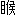

| 平安京伝奇 星月夜の宴 (もえぎ文庫) | |
| 嶋田純子 | |
| 学研 (2006) | |
学習研究社
平安京伝奇 星月夜の宴
嶋田純子
「呪術とは、一種の作法だ」
晴明がいった。
早春のある日のこと。陰陽師・安倍晴明は、十五歳くらいの少年――弟子の鬼王丸に、呪術について講義していた。
「それは、目には見えない力を発動するための方法ともいえるだろう。それらはあるていど体系化され、専門の職能者に世代を超えて伝えられる」
呪術を専門とする職能者。「陰陽師」がまさにそうである。
よく響く声で、晴明が続けた。
「呪術は隠されて伝えられる。それは何故だか解るか？」
「危険だからです」
鬼王丸は即答した。
「見えない力を操るためには、それなりの資格が必要です。力の使い方を誤ったり、乱用されることがあっては、それは大きな厄災を招くことになりましょう」
「――よろしい」
少年の答えに、晴明は満足そうにうなずいた。
貴公子然とした美貌の青年は、学者のような口調で講義を続ける。
「見えない力は正の方向にも、邪の方向にも働く。それを制御できる能力が陰陽師には必要だ。それに、術を完成させる過程そのものに、大きな危険をともなう場合もある」
ひと息ついて、晴明は、
「〝シスイの術〟というのを、聞いたことがあるか？」
「はい。たしか、鬼の一族にのみ伝わる禁断の術であると」
「そうだ。鬼王丸、おまえはその術について何か知らないか？」
「......いいえ。鬼には何かと縁のあるぼくですが、残念ながらその術を知る機会はございませんでした。ぼくを育ててくれたひともその術についての詳しい知識はなく、もしもその方法を知ることがあっても、決して実行してはならない邪術であると聞かされています」
「そうか――」
つぶやいて、晴明は難解な哲理を思索する哲学者のような顔をした。
「〝シスイ〟とは、どういう意味なのか――。それだけでも知りたい」
安倍晴明は、探求者でもあった。
一
うぐいすが鳴いた。
あちこちで白梅がほころび始めている。
陽射しはうららかで、風は甘いにおいをふくんでいる。
「......春だな」
烏帽子に狩衣姿で歩く晴明がつぶやいた。
所用で出かけた帰り道。晴明は、たくましい従者と弟子の鬼王丸を供に連れて、早春を迎えた京の町をゆるゆると歩いていた。
従者の名は涼牙。野性的な美貌の青年である。
美しい男に見えるが、その実態は式神。しかも、かつては京の街を荒らした凶悪な魔物である。
晴明の術に敗れて以来、不本意ながら式神として仕えているものの、隙あらば主従関係の逆転を狙っているらしく、油断がならない。
霊力では晴明にかなわないことを学習した涼牙は、色仕掛けならば――と、晴明に性的イヤガラセをくりかえす日々である。
猫が高い声で鳴いた。
雄と雌なのだろう、白い猫が二匹、悩ましい声をあげて絡みあっている。
それを見た涼牙は、
「恋の季節だ」
楽しそうにいう。
春の陽気に浮かれる涼牙に、晴明は冷ややかな目をして、
「――おまえは一年じゅう発情しているがな」
「よくわかっているではないか。おれはいつでも臨戦態勢だぞ？」
涼牙は晴明の背中に抱きついた。晴明は鬱陶しそうにそれを振り払う。
「やめないか。子どもの前で」
「小僧も、そろそろ大人の仲間入りをしてもいい年頃だろう。おれがいろいろ教えてやるぞ。手とり足とり、腰もとってな」
涼牙は鬼王丸の腰を撫でまわした。少年は顔を赤らめて、
「晴明さま！ 式神がいやらしいことをします！」
「涼牙、いいかげんにしないか」
「おれは恋多き式神なのだ」
「そう言うと美しく聞こえるが......、おまえはただの変態だ」
「それもまた楽しい」
「まわりが迷惑をする」
鬼王丸がうなずいた。
「春先になると、頭のなかにまで花が咲くのか、おかしな者がはしゃぎまわるので困ります」
「――たしかにな。毎年この時期になると、人も浮かれるのか、痴情がらみの事件が多くなる」
涼牙は真面目な顔をして、
「人間も、獣とさほど変わらぬのだな」
「おまえに言われたくないがな」
晴明は冷たく言い放った。
三人が堀川のそばを通りかかった時。
川縁の木陰に、誰かが倒れているのが見えた。
若い男だ。
集団で暴行を受けたのだろう、体じゅうに殴られ、蹴られたあとがある。
長い髪は乱れて、狩衣はぼろぼろだ。
涼牙は迷惑そうに顔をしかめた。
「誰だ――。こんなところに死体を捨てたやつは」
鬼王丸は駆け寄って、倒れている男の様子をうかがった。
「息があります」
涼牙は興味なさそうに腹をぼりぼりとかきながら、
「面倒くさい。遠くに捨ててこよう」
「そうもいくまい。屋敷に運ぶんだ」
そういって、晴明は涼牙を見た。涼牙はイヤそうな顔で、
「おれが運ぶのか？」
「おまえがいちばん力があるだろう」
「――褒美は高くつくぞ」
涼牙は青年を抱き起こし、その体を両腕で抱えあげた。
ぐったりと喉をそらした青年は、彫りの深い、端整な顔をしていた。
顔にも殴られたあとがあり、紫色に腫れている。唇の端から血が流れていて、無惨な形相になってはいるが、本来はかなりの美青年であるようだ。
「......ふん。なかなか美しい男だな。おれには及ばぬが」
涼牙はつぶやいた。
二
床に横たえられた青年は、小さく体を震わせると、静かに目をあけた。
「――気がついたか」
晴明がその顔を覗きこんだ。
青年は一瞬、おびえた顔をして、あわてて起き上がった。
「ツ......！」
体に痛みが走ったらしく、苦しそうに顔をゆがめる。
「無理に動くと傷口がひらくぞ」
晴明がいった。
青年はみずからの腕や胸に白い布が巻かれていることに気づいた。
おずおずと晴明を見て、
「手当をしてくださったのですか......？」
「そうだ。何があったのかは知らないが、ひどいめに遭ったようだな」
「あの――あなたさまは」
晴明が名をなのると、青年は目を見ひらいた。
「安倍晴明どの――あの有名な」
頬を赤らめ、感動に打ち震えながら、
「なんという幸運。私は運がいい......！」
青年は居住まいを正した。
「私は、坂江と申します」
坂江と名乗ったその青年は、身なりも言葉づかいも悪くはなかった。
礼儀を教えられているその様子から察するに、どこかの富貴な屋敷で働いている若者らしい。
「いったい何があったのだ？ さしつかえなければ、事情をきくが」
晴明が訊ねると、坂江はぽつりぽつりと話しだした。
彼は奉公している屋敷の姫君に想いを寄せて、彼女に近づこうしたが、それをよく思わぬ者たちに制裁を受けたという。
「これで、お屋敷には戻れませぬ......」
坂江は悲しげにいって、うつむいた。
晴明は苦笑して、
「あるじの娘に手を出そうとしたのか。それは勇み足だったな」
「お恥ずかしい......。春の陽気に身も心も惑わされてしまったのでございます」
「行くところはあるのか？」
「里に老いた母がおりますが、かような姿で帰れば、母を悲しませてしまいます」
「それもそうだな」
晴明はすこし考えて、
「傷が癒えるまで、ここで養生するがいい」
「ありがとうございます......！」
坂江は晴明に向かってひれ伏した。
部屋を出ると、涼牙と鬼王丸がいた。
「おれは反対だ」
坂江とのやりとりを聞いていた涼牙は、怒った顔でいった。
「人がいいにも、ほどがあるぞ。どこの馬の骨とも知れぬ男を屋敷に置くなど――」
「大けがをしているものを、放り出すわけにもいくまい」
晴明は鬼王丸を見た。
「鬼王丸、おまえはどう思う？」
「――傷が癒えるまでは、やむを得ないかと存じます」
「そうだな。彼が歩けるようになるまでは、ここで面倒をみることにしよう」
「何故おれの意見は聞かぬのだ」
不服そうに言う涼牙を無視して、晴明は廊下を歩いていった。
＊
坂江の傷は、驚くほど早く癒えていった。
その回復力が人間ばなれしていることを、鬼王丸は不審に思った。
数日後の朝のこと。
鬼王丸が掃除をしようと庭に降りると、すでに坂江が竹箒を持っていた。
首や腕にまだ白い布を巻いてはいるが、なれた手つきで竹箒を動かし、涼やかな音を立てて庭を掃き清めている。
それを見た鬼王丸は戸惑った。
「あの――それは、ぼくが」
「ああ、鬼王丸さん。おはようございます」
坂江はにっこり笑って
「せめてこのくらいはさせていただかないと。どうか、休んでいてください」
「............」
かなり回復しているとはいえ、まだ傷は完治していない。
けが人にこんなことをやらせていいのだろうか。
――それに、自分の仕事をとられたようで、おもしろくない。
そんなに元気なら、早く出て行けばいいのに――。
ついそう思った鬼王丸は、
（ぼくは、心が冷たいのだろうか......？）
と、すこし自己嫌悪におちいった。
「すっかり元気になったようだぞ。そろそろ追い出したらどうだ？」
濡れ縁から庭を眺めていた涼牙が、晴明にいった。
庭を掃除する坂江を見て、晴明は微笑する。
「彼なりに気をつかっているようではないか」
「あたりまえだ。――それにしても、気をつかっているのなら、とっとと礼でも置いて出て行けばいいものを」
「まだ傷が癒えてはいない。そう冷たくするな」
「居心地がいいから居着くのだ。おれが居心地を悪くしてやる」
「あのものに、つまらぬ手出しをするな」
「おぬし......まさか」
涼牙は晴明の肩をつかんだ。
「あの男の美貌に惑わされたのではあるまいな？ 許さんぞ。おれというものがありながら」
晴明は涼牙の手をはたいた。
「――私にも考えがある。よけいなことは、いっさいするな」
その夜のこと。
深夜に目を覚ました鬼王丸は、小さく震えて、起き上がった。
用を足そうと厠へ向かう。
廊下を歩いていると、庭に人影が見えた。
「............」
鬼王丸は息を飲んだ。
ぼう――と青白く光るその姿。
亡霊か何かだと思った。だがよく見ると、庭に立っているのは坂江のようだ。
空には満月。その月明かりを浴びて、白銀にきらめく髪。
坂江の全身から、青白い炎のような光が立ちのぼっている。
見ると、坂江の頭には二本のツノがあった。
（――鬼？）
坂江は月の霊力を取り込んでいるようだった。
見る見るうちに傷は癒え、髪も肌も艶やかになる。
目に深い輝きがやどり、唇は血の色を帯びて、その美貌はいっそう妖しく匂い立つ。
気配に気づいたように、坂江が振り向いた。
その瞳は、まるで夜歩く猫の目のように、ぎらりと光った。
冷ややかな紫紺の光。
「............！」
鬼王丸は音を立てないようにして、その場から去った。
夜が明けるのを待って、鬼王丸は晴明に告げた。
「あのひとは人間ではありません。――鬼です」
「............」
しばらく無言でいた晴明は、
「知っている」
と答えた。
「では、何故――」
鬼と人は、種族がちがう。鬼と人との交流は、多くの場合、悲劇で終わる。
「鬼の一族のなかでも、紫紺の瞳を持つ者は狡猾で――しかも好色で、残忍だと聞きます。おそばに置くには危険すぎます」
「決めつけるのはよくない。瞳の色や姿かたちだけで、相手を判断するのは愚かなことだ」
「しかし――」
「先入観を持つことで、見るべきことも見えなくなる。それは陰陽師としての成長の妨げになる。私の身を案じてくれるのはうれしいが、外見だけで相手を決めつけるのは感心しない」
「............」
暗い顔をする鬼王丸に、晴明は笑いかけた。
「私は彼に興味がある」
「――興味があるだと？」
ぽかぽかした陽射しの下、濡縁に腰をおろす涼牙が、不機嫌にいった。
「坂江とかいうやつが鬼だと知って、陰陽師としての好奇心をくすぐられたのか」
「そのようだな」
鬼王丸は甘酒をすすった。
「紫紺の瞳を持つ鬼――。危険だとは申し上げたのだが、晴明さまは、何かお考えがあるようだ」
涼牙は苦い顔で、
「あいつの目が、おれ以外のものに向けられるのは気に入らん。あいつは、おれを――おれだけを見ていればいいのだ」
涼牙の言葉を聞き流して、鬼王丸は甘酒を飲んで息をついた。
「甘酒がおいしい......」
「晴明がほかの男とべたべたするのは許せん。出来ることなら、あいつを一室に監禁して、誰にも会わさず、縄で縛りあげて、夜も昼も犯しまくりたいくらいだ」
鬼王丸は飲みかけた甘酒をふきだした。
「――おまえがそばにいるほうが、よっぽど危ないな」
と――晴明が鬼王丸を呼ぶ声がした。
「はい、ただいま」
鬼王丸は、すぐに晴明の部屋に向かった。
晴明は寝床に上半身を起こしていた
苦しそうな様子だった。その頬はすこし紅く、目はうるんでいる。
「晴明さま、お具合が......？」
「すこし熱があるようだ。薬を飲むから、水を持ってきてくれないか？」
「すぐに」
「ああ、鬼王丸」
「はい」
「坂江に運ばせてくれ」
ほどなく、坂江が水差しを運んで来た。
「――すまないな」
晴明は坂江に身を寄せて、水差しを受け取った。
そのとき、着物の襟がはだけて、晴明の胸についた傷あとが見えた。
坂江は驚いた顔をした。
「晴明どの。胸に傷が――」
「......ああ」
晴明はそっと襟を合わせた。
「恥ずかしいものを見せたな。これは式神につけられた傷だ」
それは以前、狂乱した涼牙に襲われた時のものだ。
「――私も油断したものだ」
晴明は自嘲のような笑みを見せた。
坂江は晴明の胸もとを見て、ごくりと喉を鳴らした。
その様子をうかがっていた涼牙は身悶えした。
「なんなんだ、あの態度はっ。誘っているようにしか見えんぞ」
「晴明さまのことだ。何かお考えがあってのことだろう」
鬼王丸がいった。
「――晴明さまは、御自身の存在そのものが武器になるということを、ご存じなのかも知れない」
「美貌も武器か。色香で相手を惑わすのか。――悪女のようなやつだ」
坂江が部屋を出ると、入れ替わるように涼牙が飛び込んだ。
「――見ていたぞ」
と晴明に詰め寄る。晴明は苦笑して、
「のぞき趣味は、ほどほどにしろ」
「遊び女のようなマネをしおって......。どういうつもりだ？ そんなに男が欲しいのなら、おれがいつでも相手をしてやるぞ」
「そのことだがな」
「なんだ。その気になったのか？」
晴明は涼牙を手招きすると、その耳もとに何ごとかを囁いた。
三
朧月夜である。
夜空には、ほのかにかすんだ月。淡い光が、あたりを照らす。
寝静まった屋敷に、白い影がうごめいた。
音を立てず、機敏な動きで廊下を移動する。
坂江だ。その手には小柄を握りしめている。
彼は晴明の部屋に忍び込むと、眠っている晴明に小柄を振り下ろした。
「――――！」
跳ね起きた晴明が腕で身を守る。
だが着物の袖が切れて、腕から血が流れた。
小柄の刃についた血をぺろりと舐めて、坂江は笑った。
頭には二本のツノ。その美しい顔は、邪悪な魔性のものに変わっている。
「――シスイをいただこうか」
晴明は怪訝な顔をした。
「シスイとはなんだ......？」
「それを聞けば死ぬことになるぞ。それでも知りたいか？」
「――知りたい」
落ちついた声で晴明はいった。
「私は陰陽師だ。死の間際まで、術を追求したい」
坂江は哄笑した。
「さすが天下無双の陰陽師殿。いい心がけだ。その度胸に免じて教えてやろう。シスイとは人が流す四つの水――血と汗、涙、そして精――女であれば淫水のことだ。その四つの水を得ることで、相手の霊力をも我がものにすることが出来る」
「......なるほどな」
坂江はニヤリと笑って、
「おれを拾ったのは、運が良かったな――晴明。最高の快楽のなかで死ねるぞ」
いやらしく唇を舐めると、坂江は着物の前をはだけた。
息を荒げて、女を犯そうとする男のように晴明に襲いかかる。
そのとき、
「涼牙――！」
晴明が合図した。
ぐるぉおおおう――！
白い獣が飛び込んできて、坂江に襲いかかった。
「うわ......っ！」
坂江は白い獣に押し倒され、床を転げまわる。
白い獣は坂江の肩に噛みつき、その腕を食いちぎった。
どさっ。血まみれの腕が床に落ちた。
「おのれ......！」
坂江はちぎれた腕をもう片方の手でつかむと、
「おぼえておれ！」
そう叫んで庭に飛び出し、闇のなかに姿を消した。
「晴明さま、だいじょうぶですかっ！」
屏風のかげに身をひそめていた鬼王丸が晴明に駆け寄った。
「大事ない」
「血が......。すぐに手当を」
腕の傷の手当を受けながら、晴明はつぶやいた。
「なるほどな。シスイとは、四つの水のことであったか」
血と汗、涙と精――女ならば淫水。
「おそらく交わりながら相手の体を傷つけて、血と汗、涙と精をすすり、やがては死に至らしめるのだろう。――残酷な術だ。禁断の術になるのも、うなずける」
「紫紺の鬼が、好色で残忍だと言われる由縁かもしれませんね」
晴明の腕に白い布を巻きながら、鬼王丸がいう。
「あの鬼、従順なふりをしていたようですね。そして晴明さまを油断させて、霊力を奪うつもりだったのでしょう」
「ああ。狡猾な鬼だ」
人間の姿に戻った涼牙が、目を細めた。
「それを知って、あえてそばに置いていたのだろう。禁断の術の方法を聞き出すために。しかもわざと隙を見せて」
「そうだ。鬼の一族と接触する機会はあまりないからな。――もっといろいろなことを聞き出したかったが、シスイの術のことを聞き出せただけでも上首尾だろう」
「おぬしのほうが、よほど狡猾ではないか」
あきれたようにいう涼牙に、晴明は無言で、ただ微笑した。
鬼王丸は晴明の手当を終えて、息をついた。
「ともあれ、ご無事でよかった......。いくら禁断の術を知るためとはいえ、こんな危険なことは二度としないでください」
「まったくだ。呪術ごときにカラダを張ることはなかろう」
晴明は眉をつりあげた。
「聞き捨てならんな。私は命がけで呪術にのぞんでいる。それに禁断の術もふくめて、すべてを究めてこそ一流の陰陽師といえるのだ」
「色仕掛けまで究めてどうするのだ」
そうつぶやいて、涼牙は何かよからぬことを思いついたような顔をした。
「なあ、晴明」
「なんだ」
「シスイの術とやらは、ほんとうに効くのだろうか」
涼牙は意味ありげに笑う。
「呪術にカラダを張る覚悟があるのなら、シスイの術とやらが本物かどうか、確かめてみぬか？ 血と汗、涙と精を流したところで、手加減さえすれば死ぬとは限るまい。おれがおぬしの四水を得て、おぬしの霊力をも得られたならば、シスイの術は本物だということになる。どうだ、試してみたいと思わぬか？」
「――痛そうだから断る」
にべもなくいった晴明に、涼牙はすり寄る。
「苦痛ばかりだとは限らぬぞ？ 案外、いままで知らなかった、めくるめくような快感が――」
「しつこいぞ、涼牙！」
まとわりつく涼牙を、晴明は扇ではたいた。
あたたかい風が庭の草花をさわさわとゆらした。
朧月が白梅を照らす、早春の夜である。
長雨に打たれ、京の町は色あせていた。
梅雨の季節である。
一条戻り橋の近くにある安倍晴明の邸宅。しとしとと雨の降る庭を眺めて、晴明の弟子・鬼王丸は途方に暮れていた。
「洗濯ものが乾かない......」
水干姿の、利口そうな少年。晴明の身の回りの雑用は、彼の仕事である。
部屋の床でごろごろしていた大柄な男が身を起こした。
野性的な美貌のその青年の名は涼牙。表向きは晴明の従者ということになっているが、その実体は魔物。晴明の式神である。もとは京の町を荒らした凶悪な魔物であったが、晴明の術に敗れて以来、不本意ながら式神として仕えている。
「このところ、雨ばかりだな」
涼牙は汗と湿気にべたついた着物をつまんで、
「こうじめじめしていると、体にカビが生えそうだ」
「気持ちの悪いことをいうな」
部屋の奥で書物を読んでいた晴明がいった。
「雨は天の恵みだ。梅雨に雨が降らなければ、夏に水が足りなくなる。それに、もうすぐ梅雨もあけよう」
涼牙は目を細めた。
「おぬしはいつ見ても涼しい顔をしているな。汗もあまりかかぬし」
晴明は微笑する。
「大切なのは、心の持ちようだ」
「すました風情が憎らしい。おぬしも汗まみれにしてくれる」
犬のように飛びついてくる涼牙から、晴明は優雅に身をかわした。そのとき、
「ごめんくださいませ」
玄関のほうで声がした。
一
身なりは質素だが、品のいい老夫婦だった。そっと身を寄せあうその姿から、仲の良さがうかがえる。
「安倍晴明どのに、お願いがございます――」
せっぱつまった様子の老夫婦を奥の部屋に案内すると、晴明は事情を尋ねた。
「じつは、娘が奇妙な病に苦しんでおります」
夫がいった。妻が顔をあげ、
「年をとってから、ようやく授かったひとり娘にございます」
声を詰まらせて、着物の袖で涙をおさえる。
「娘は――白蓮は、わたしたちの宝なのです」
「――白蓮。娘御のお名前ですか」
「さようでございます」
「医者にも診せたのですが、見たことも聞いたこともない病で、手のほどこしようがないと」
「どうか、晴明さまのお力で娘を助けてくださいまし」
老夫婦は両手をついた。
「――急を要するようですね」
晴明がいった。
「さっそく娘御の様子を見にうかがいたいが、よろしいでしょうか」
「ありがとうございます......！」
出かける仕度をし、鬼王丸に留守を頼むと、晴明は老夫婦に導かれ、その家に向かった。
晴明のそばには、十歳くらいの、愛らしい女童がつき従っている。
「――なんでこんな姿に化けねばならぬのだ」
少女の声で、だが涼牙の口調で女童がいった。
「相手は若い娘だ。いつものおまえの姿では、娘がこわがる」
「微妙に失礼な発言だな」
「小さな女の子なら、娘も警戒しないだろう」
晴明は笑って、女童の頭を撫でた。
「なかなか可愛いぞ、涼牙。とうぶんその姿でいるがいい」
「......。うれしいような、屈辱を感じるような、複雑な気分だ」
すねたような顔をして、女童はつぶやいた。
古びてはいるが、手入れの行き届いた家だった。
晴明とその供の女童は、奥にある一室に案内された。
ほのかに甘い香りがただよっていた。だが、香をたいているような様子はない。
几帳の向こうに、横たわる人影がある。
「白蓮や。晴明さまが来てくださったよ」
母親が声をかけると、横たわっていた娘は、小さく咳をしながら、ゆっくりと身を起こした。
髪の長い、色の白い、美しい娘だった。
だが病んだ顔は青白く、生気が感じられない。
両親に導かれて現れた、烏帽子に狩衣姿の貴公子然とした美貌の青年が、かの有名な陰陽師そのひとであることを知ると、娘は戸惑ったような顔をした。
「お父さま、お母さま――。わたしのために、安倍晴明さまをお呼びくださったのですか......？」
娘は乱れた髪と、白い着物の襟をととのえた。だがそれすらも大儀であるらしく、苦しげな咳をする。
晴明は娘に歩み寄り、静かに膝をついた。そのそばに女童がちょこんと座る。
父親が娘をうながした。
「――白蓮。晴明さまにお見せしなさい」
娘は着物の襟を押さえて、小さく首を振った。
「何を恥ずかしがることがあるものか。お見せせねば、治していただくこともできぬではないか」
「白蓮や。恥ずかしいことなどありませんよ。さあ、晴明さまにお見せするのです」
「............」
娘はうつむいて、そっと襟をひらいた。
晴明は息を飲んだ。
娘の胸――ふたつの可憐なふくらみのあいだに、大輪の白い花が、白蓮が咲いていた。
二
邸に戻った晴明は、書庫の典籍に埋もれていた。
古今の文献につぎつぎと目を通しながら難しい顔をしている晴明を見て、涼牙がいった。
「――わからぬのか？」
「見たことも聞いたこともない」
低い声でつぶやいて、晴明は書庫の片隅で書物をひろげている少年を見た。
「鬼王丸、そっちはどうだ」
「そのような病の記述は見あたりません」
「そうか――」
晴明は苦い顔で息をついた。涼牙は意地悪く笑う。
「さすがの陰陽師どのも、お手上げか」
「前例がないというだけだ。原因さえわかれば、対処法はあるはずだ」
「無駄だな。あの娘はそう長くはない。命の火が消えかかっているのが、おれにもわかる」
涼牙がいう。
「だがひとつ不思議なことがある。死期が近づいているものからは死臭がするものだが――、あの娘にはそれがない。それどころか、花のようないい香りがした」
「――それは私も感じた」
と晴明。涼牙は肩をすくめて、
「しかし、白蓮という名の娘に、白蓮が咲くとはな。できすぎているではないか」
「名は体をあらわすというだろう。名前というものには、呪力があるのだ」
「そういえば、おぬしの〝晴明〟という名には、日と青と月があるな」
日はすなわち太陽。そのあたたかさ、ときには灼けつくような烈しさ。
そして月の静けさと美しさ。その両面を晴明は持っている。
太陽と月を抱くもの。それは天。――その無限の広がり。
涼牙は晴明をじっと見つめてつぶやいた。
「――色なら青だ」
涼やかさ、ときに冷たさを感じさせる色。知性的で、それでいて安らぎをもたらす色。晴明という男を色にたとえるなら、それは青のほかにはありえない。
涼牙は納得したようにうなずいた。
「ふむ。そう考えると、晴明という名は、おぬしをよくあらわしているな」
＊
晴明は毎日のように娘のもとを訪れた。
娘は日に日に弱り、やつれていった。それとはうらはらに、白蓮の花は美しく咲き誇った。まるで娘の命を吸い上げているかのように。
娘の肌は乾き、色あせてゆく。その胸を切り裂くようにして、つぎつぎと、白い、みずみずしい花弁がひろがってゆく。
さなぎから蝶が羽化するのを見るようだった。
（この娘は――）
晴明は思った。彼女は何か、変化の途上にある。
肉体は死に向かっている。だがそれは、ひとつの過程に過ぎないのではないか......？
「痛みますか？」
晴明は娘に尋ねた。娘は小さくうなずいて、
「胸の裂け目が、ちくちくと痛みます。でも、さほど苦しくはありません。すこし――熱っぽく感じます。体のなかで、火が燃えているかのよう。それが、この胸から溢れ出してくるようなのです」
「............」
咲き誇る白蓮の花は、娘の胸から燃え上がる白い炎のように見えた。――晴明には為す術がなかった。
そんなある日の午後のこと。晴明が、娘のいる部屋に入った瞬間。
清らかな水のにおいがした。
晴明は、一面に咲き乱れる白蓮の花を見た。
そこは池だった。翡翠の色をした水がゆらめいている。
娘はその水底で微睡んでいた。
（......これは）
幻なのか――。晴明は呪文を唱えて、印を切った。
すると白蓮の池は消え、寝床に横たわる娘の姿だけがあった。
娘は、ふっと眼をあけた。
「ああ......晴明さま」
苦しげに身を起こして、晴明を見上げる。晴明は娘のそばに寄り添った。
娘は長い髪を指で梳いて、つぶやくようにいう。
「このごろ、不思議な夢をよく見ます」
「夢を――？」
「はい。ついいましがたも見ていました。きれいな白蓮の花が咲き乱れる池の夢です」
「......あなたの夢があふれていたようです」
晴明は、娘の頬をそっと撫でた。
「晴明さま......」
娘は安らかな表情で、静かに眼をとじた。
「おそろしくはありません。もうすぐ、わたしは美しいところへ行ける。いえ――帰れるような気がするのです」
晴明の話を聞いた両親は涙ぐんだ。
「娘は――白蓮は、極楽浄土の夢を見ているのでしょう」
「もはや命は長くはない......」
老夫婦は目を見交わすと、何かを決意したようにうなずきあった。そして夫が口をひらいた。
「こうなっては隠すこともありますまい。すべてをお話しいたしましょう。じつは、あの子は」
「わたしたちの娘ではないのです」
妻がいった。
――ふたりが夫婦となり、数年が過ぎた頃のこと。
夫婦は仲睦まじく暮らし、深い情を交わしていたが、望んでも望んでも子に恵まれることがなかった。
そこで夫婦は子授けの霊験があるという社に参詣した。
山奥にある、清らかな社であった。
その帰り道、ふたりは不思議な場所に迷い込んだ。
広い池。一面に白蓮の花が咲き乱れている。
天から光が射し、涼やかな風が吹き抜ける。
なんという清らかさ。なんという静寂。
ここは、この世ではないのだろうか――。
ふたりは、しばし言葉を失い、風にそよぐ白蓮の花に見とれていた。
と――どこからか、赤子の泣く声がした。
池のほとりで、生まれてまもない赤子が泣いていた。
蓮の葉にくるまれるようにして泣いているのは、可愛らしい女の子だった。
――これは天からの授かりもの。
夫婦はその赤子を連れ帰り、大切に育てた。
それが娘、白蓮である。
「大切に育ててまいりました。あの子が、私たちに、どれほどのよろこびを与えてくれたことでしょう......！」
涙にむせび、泣きくずれる妻の肩を、夫がそっと抱いた。
「――これ以上、娘が苦しむのを見ているのはしのびない。助からぬのなら、せめて、安らかな最期を」
夫は真剣な眼で晴明に訴えた。
三
「美しい娘だ。まだ若い。花ならようやく咲き始めた頃だろう。死なせるには惜しいぞ」
涼牙がいった。
「命を延ばすことはできぬのか？ おぬしの得意な陰陽の術で」
「むずかしいな」
晴明が答えた。
「いまの状態をしばしのあいだ保つことならできよう。だが、そうしたところで娘の苦しみを長引かせるだけだろう。娘も、もう気づいているようだ。それに両親も娘の安らかな最期を望んでいる」
「ならば――」
「ああ。見送るのだ」
晴明は静かにいった。
「すべてのものに訪れることだ。大いなる摂理には逆らえぬ」
白蓮の花は咲き乱れ、娘は息も絶え絶えとなった。
「晴明さま。お願いがございます」
横たわる娘が晴明を見上げた。
晴明が娘の唇に耳を寄せると、娘は何ごとかを囁いた。
「......。では、お望みのように」
「あなた様なら、わかってくださると思いました」
娘は微笑んで、さらに晴明に頼んだ。
「父と母に別れを告げとうございます」
晴明は娘と両親を会わせた。
「お父さま、お母さま――」
娘は両親に別れの言葉を告げた。
「お世話になりました。短いあいだではございましたが、白蓮はお父さまとお母さまの娘になれてしあわせでした。できることなら、来世でも夫婦となって、わたしを娘にしてください」
老夫婦は声をあげて泣きくずれた。
屏風のかげからそれを見ていた涼牙がつぶやいた。
「親不孝な娘だ。親より先に逝くものではない。見ろ、両親の悲しみようを。あの娘は、両親を悲しませるためにいたようなものだ」
「――そうではない。あの娘がいたということ、あの娘と過ごした時間が夫婦のよろこびになるだろう。そして両親に愛され、慈しまれたことが、あの娘のよろこびになる。別れはつらいが、あの夫婦、そして娘の人生も、決して不毛なものではない。私はそう思う」
今生の別れが終わると、晴明たちは白蓮を牛車に乗せた。
牛車は京の町を抜け、山のほうへと向かった。
山の麓で晴明が牛車から降り立った。そのあとに、娘を抱いた涼牙が続く。
娘はぐったりとして、ほとんど息をしていなかった。
青白い肌は蝋のように透きとおり、体は冷たい。
命の終わりが近いのが、誰の目にもあきらかであった。
山道を抜け、一行は白蓮の咲く池のほとりについた。
水のにおいを感じて、娘が静かに顔をあげた。
「ああ......懐かしい」
涼牙の腕のなかで、娘がつぶやく。
「ここは、わたしが生まれた場所。いつも夢に見ていた池」
娘は眼をとじた。
「いまとなっては......人として過ごした日々が夢のようです」
その頬に、水晶のような涙がこぼれた。
「お別れです。もう――この姿をとっていることが、かないません」
晴明は娘の両手をとった。
それはひんやりと冷たく、白い肌の下に清らかな水が流れているかのようだった。
「――さようなら」
「お元気で」
娘は静かに微笑んだ。
ふたりの手が離れると、涼牙は娘の体を池の水にひたした。
音もなく波紋がひろがった。
娘の体はまるで小舟のように翡翠色の水面をゆらゆらとただよっていたが、やがてゆっくりと沈み、その姿は無数の泡となって消えた。
と――水面に可憐な白蓮がひとつ、咲いた。
晴明は悲しげに目を細めた。
「......儚いものだな」
「そう心を痛めるな」
晴明を慰めるように、涼牙がいう。
「美しい人生の、美しい終わりだ」
「人生――？ いや、あの娘は花だったのだよ」
「......なんだと？」
「子を望む夫婦の祈りに、白蓮がこたえたのだ。そして池に咲く花の一輪を人の姿に変え、夫婦のもとへと送った......」
「花が人の姿をしていたというのか」
「そういうことだ。そしていま、彼女はあるべき場所に帰ったのだ」
「そんなことがあるのか」
「不思議なことではないだろう。人はみな、どこからかやって来て、この世でひとときその姿をとっているようなものだ」
そしていつか、もといた場所に帰るのだ――と晴明はいう。
「私がこの姿でいるのも、ほんのわずかな時間のことだろう。人の姿など、かりそめのものに過ぎぬ」
「......ならば、おぬしもいつか花になるのか」
だとすれば――。
「それはきっと、青い、美しい花だろうな」
涼牙はつぶやいた。
梅雨明けの空から光が射して、白蓮の咲く水面を宝石のようにきらめかせた。
やさしい風が吹き抜けて、囁くように白い花がゆれる。
まばゆいばかりの、夏の初めである。
りり......りりり......
鈴の鳴るような音がした。鬼王丸が見ると、ひとりの男が籠に入れた鈴虫を売っていた。
初秋の夕暮れのことである。
夏は猛烈に暑かった京の町も、朝夕には涼しい風が吹くようになった。
夕闇につつまれてゆく町の風景。静かに響く鈴虫の声は、不思議なほど心をなごませた。
（――きれいな声だ）
少年は立ちどまり、虫籠に入った鈴虫を見た。
籠はいくつかあったが、そのなかで、ひときわ美しい声で鳴いている鈴虫に眼をとめる。
黒褐色の羽根。白い糸のような触覚。
それは姿も愛らしく、どことなく品があるような気がした。
「............」
その鈴虫が欲しくなった。鬼王丸は水干の袂をまさぐって、持ち合わせの小遣いを手にした。
「これをおくれ」
「はいよ」
虫売りの男は銭を受け取ると、虫籠を鬼王丸に渡した。
「餌はどうすればいい？」
「キュウリを小さく切って、棒にさしてやるといいよ」
「そうか。ありがとう」
鬼王丸は鈴虫の入った籠をだいじに抱えて、屋敷へと帰った。
一
「――鈴虫か」
大柄な男が虫籠をのぞきこんだ。
野性的な美貌のその青年の名は涼牙。表向きは安倍晴明の従者ということになっているが、その実体は式神である。かつては京の町を荒らした凶悪な魔物だったが、晴明の術に敗れて以来、不本意ながら仕えている。
「おもしろい。ほれ、鳴け。鳴かぬか」
涼牙が虫籠をゆさゆさ揺すると、鈴虫は凍りついたように動かなくなった。
「やめないか。鈴虫が怖がっている」
鬼王丸が強い口調でいった。涼牙は不機嫌な顔で、
「つまらぬ。ちっとも鳴かぬではないか。捨ててしまえ、こんなもの」
「静かにしていれば、美しい声で鳴く」
そこに晴明が現れた。
「――何を騒いでいるのだ」
烏帽子に狩衣姿の貴公子的な美青年。天下無双と讃えられる陰陽師・安倍晴明。
――清流のような美貌である。彼のまわりだけ、涼しい風が吹いているかのようだ。
鬼王丸が振り返った。
「あっ、晴明さま。式神が鈴虫をいじめます！」
「いちいち晴明に告げ口するな、小僧」
涼牙は憎々しげにそういって、虫籠を手にした。
「こんなものがあるからいかんのだ。おれが捨ててやる」
「やめろッ！ ぼくが買ってきたんだ！」
鬼王丸は涼牙に飛びついて、虫籠を奪い返そうとする。涼牙はそれをかわして、虫籠を高く持ち上げた。
「山辺に行けば、うるさいほど鳴いておるぞ。わざわざ買ってくるやつの気が知れん」
「このあたりには、いないじゃないか！」
京の町は、いわば都会である。虫はさほど多くはない。そのため風流を愛する貴族は、美しい声で鳴く虫を遠い野原で集めてきたということが『源氏物語』にも記されている。
「返せ、このバカ式神！ 晴明さま、なんとかしてください！」
「涼牙、いいかげんにしないか！」
晴明の一喝に、涼牙は不服そうな顔をする。
「いつも怒られるのはおれだな」
「どう見てもおまえが悪いだろう」
晴明は涼牙から虫籠を奪い取った。そのなかを覗きこんで、
「ほう――。美しい鈴虫だな」
「町で虫売りから買いました」
と鬼王丸。晴明は微笑する。
「小さくとも命あるものだ。きちんと世話をしなさい」
「はい、晴明さま」
虫籠を受け取ると、少年は晴明を見上げた。
「厨でキュウリを分けてもらってもよろしいでしょうか？ この鈴虫にやりたいのです」
「ああ、やりなさい」
「ありがとうございます」
鬼王丸はうれしそうに笑って、厨に向かった。
二
日が暮れて、屋敷のなかにも涼やかな風が流れた。
鬼王丸は自分の部屋で、鈴虫に餌をやっていた。
「さあ、お食べ」
輪切りにしたキュウリを小さな棒にさして、虫籠に入れてやる。
鈴虫はしばらく戸惑うようにしていたが、やがてキュウリに近づくと、うまそうにかじりはじめた。
「おいしいかい？」
愛らしい生き物だ。見ているだけで楽しい。
しばらくすると、鈴虫は艶やかな羽根をふるわせて、綺麗な声で鳴きはじめた。
自室で書き物をしていた晴明は、ふと筆をとめた。
「......いい声だ」
鈴を転がすような虫の声に、心を癒される。――いや、清められていくかのようだ。
「............」
晴明は目をとじて、しばし虫の声に聞き惚れた。
――どこからともなく涼牙が現れた。
誰かを脅かそうとしている子どものように息をひそめ、音を立てずに晴明に近づくと、涼牙は晴明を背中からぎゅっと抱きしめた。
目をあけた晴明は、こめかみを引きつらせて、
「何をしている......？」
「後ろ姿がさびしそうだったのでな」
陰陽師に仕える式神は、下剋上を狙っている。隙あらば何かを仕掛けてくるので油断できない。
晴明は冷静な口調でいう。
「私は虫の声を楽しんでいるのだが」
「おれはおぬしの喘ぎ声を楽しみたい。おれの腕のなかで鳴け」
甘い声でそう囁いて、涼牙は晴明の胸もとに手を差し入れた。
どすん、ばたん。大きな音がした。
晴明と涼牙が取っ組み合いをしているらしい。
り......
音に驚いたのか、鈴虫は鳴くのをやめた。
「ああ、だいじょうぶ。気にしなくていいんだよ」
鬼王丸が鈴虫に語りかけた。
「また式神が悪さをしたのだろう。晴明さまも、御苦労の多いことだ。――でもあれで案外、仲がいいのだよ。式神をこらしめる時の晴明さまは、楽しそうな顔をしていらっしゃる」
涼しい風が吹いて、御簾がゆれた。すると部屋に月明かりが射し込んだ。
鬼王丸は御簾を上げて、空を見上げた。
「いい月だ――」
藍色の空に、まるい月が輝いていた。
＊
その夜、鬼王丸は鈴虫の声を聞きながら眠りに落ちた。
夜もふける頃――。
かすかな気配を感じて、鬼王丸は薄目をあけた。
そばに、誰かがいるような気がする。
部屋に射し込む淡い月明かり。そのなかに人影がゆれた。
（............？）
美しい少女がいる。
十五、六歳くらいだろうか。白い花と銀の飾りがついた天冠をかぶり、白銀に輝く薄衣と藍色の長い裳をゆらしている。
異国の巫女のような装束だ。
月光にきらめく長い髪、白い肌は真珠のよう。つぶらな瞳は濡れたように輝き、愛らしい唇は珊瑚の色をしている。
――これは夢か、幻か。
いや、たしかに少女はそこにいる。
でもその存在感はまるで月光のように淡く、声をかければ消えてしまいそうだ。
月の精霊なのだろうか――？ この世のものとは思えない。
少女は悲しげな顔でうつむくと、装束の袖で涙を隠した。
（泣いている......？）
そのとき、りりり......と鈴のような音がした。
「............」
きゅうに睡魔に襲われて、鬼王丸は深い眠りに落ちた。
翌朝、目覚めた鬼王丸は、身を起こして部屋を見回した。
少女の姿はどこにもなく、ただ籠のなかに鈴虫だけがいた。
「――と、いうわけなのです」
昨夜の出来事を話すと、涼牙は意地悪く目を細めて、
「思春期の少年の妄想ではないか？」
と鬼王丸をからかうようにいった。
「小僧もそろそろ年頃だ。身も心も異性を求めているのだろう。女の子とつきあうのもいいが、その前におれがいろいろ教えてやろう。まずは着物の脱がし方だ」
涼牙は鬼王丸の水干を脱がそうとした。鬼王丸は抵抗して、
「晴明さま！ 式神がいやらしいことをします！」
「涼牙、やめないか」
「おれは小僧を教育しているのだ」
「おまえはよけいなことまで教えるつもりだろう」
「愛撫のしかたや体位の種類は、よけいなことなのか」
「もう黙れ、涼牙。――せめて夜にしろ、そういう話は」
晴明は虫籠を覗きこんだ。
しばらく鈴虫を見つめていた彼は、何かに気づいたように声をあげた。
「ほう......、これは」
「なんだ。鈴虫がどうかしたのか」
「――月を恋しがっているのだよ」
晴明の言葉に、涼牙は困ったような顔をする。
「ワケがわからんぞ。説明しろ」
「夜になればな」
晴明は何かを企むように眉を上げると、涼やかに笑った。
三
その夜は、満月であった。
屋敷の庭は月光に照らされている。その土の上に、晴明は円と五芒星を組み合わせた魔法陣のようなものを描いた。
そして、図形の中心に鈴虫の入った虫籠を置く。
涼牙が不思議そうな顔をした。
「何をするのだ」
「まあ、見ていろ」
晴明は口もとで指をそろえて、小さく呪文を唱えた。
雲が流れ、月の光が強くなった。
と――月光を浴びた魔法陣が青白い光を放った。虫籠をつつみこむように、光の線が走る。
鈴虫が淡く発光した。光はやがて大きな球となり、そのなかに人の姿が現れた。
白い花と銀の飾りがついた天冠、白銀の薄衣と藍色の裳。
「あなたは......」
鬼王丸が声をあげた。目の前にいるのは、昨夜、鬼王丸が見た少女だった。
少女はみずからの姿を見て、安堵したように息をついた。
「――うれしや。もとの姿に」
異国の巫女のようなその少女は、晴明たちを見ていう。
「わたしは月の都にある泰山府君の神殿に仕えるもの」
泰山府君は宇宙の生成、森羅万象をつかさどる神である。
少女は晴明を見て、うっとりと目を細めた。
「噂に聞くそのお姿、そのお力。もしや、あなたは安倍晴明さまでは......？」
「さよう」
晴明がうなずくと、少女は拝むような仕草をした。
「お目にかかれて光栄にございます」
「月の都におわすおかた――。鈴虫に身をやつされていたのは、何かご事情がおありなのでしょうか」
「......それは」
少女は口ごもったが、やがて静かに語りだした。
「わたしは神殿に仕える巫女にございます。〝鈴の巫女〟と呼ばれて、毎朝毎夕、鈴を鳴らして神殿を清めるのが仕事でしたが、毎日が退屈で、つい仕事を怠けてしまったのです」
涼牙が口をはさんだ。
「見れば遊びたい年頃だ。たまには仕事をさぼりたくなる時もあるだろう」
鈴の巫女は、しょんぼりとうつむいた。
「でも、仕事を怠けたことが泰山府君のお怒りにふれ、わたしは罰として鈴虫に姿を変えて地上に落とされてしまいました。それゆえ、心を改めるまで、月に帰してはいただけぬのです」
涙声でそういうと、少女はわっと泣きだした。
「わたしは、どうしたらよいのでしょう？ 鈴虫となっては、ただただ鳴くことしかできませぬ。心を改め、善き行いをしたくとも、鈴虫の姿では......。
鈴虫となってから、野原にあっては鳥に喰われることを恐れて逃げまわり、人に捕らわれ籠に入れられては、もてあそばれ、慰みものにされることを恐れて我が身を嘆いておりました。
輝く月が天のもっとも高いところに昇る一瞬だけ、もとの姿に戻れるものの、月の都へ帰ることはかなわず、泣く声は鈴の音になるばかり――。でも、わたしは鳴くことしかできませぬ」
晴明はやさしい微笑を浮かべて、少女に語りかけた。
「あなたは、美しい音色で私たちを楽しませてくれましたよ」
「......え？」
戸惑う少女に、鬼王丸が笑いかけた。
「晴明さまのおっしゃるとおりだよ。鈴虫だったあなたの綺麗な声に、ぼくは、ずいぶん心を癒された」
「............」
少女はすこし考えて、やがて何かに気づいたようにいった。
「わたしが奏でる音で、誰かを喜ばせることができるのですね」
ああ、と声をあげて、
「神殿にいた時は、ただ毎日、言われたことをやり、決められたことを繰り返しているだけで、自分のしていることに意味があるなどとは思いもしなかった......。それゆえ仕事は退屈で、わたしは怠けることばかり考えていました」
鈴の巫女は恥ずかしそうにうつむいた。
「思えば、それがわたしの過ち――。心のこもらない、いいかげんな仕事をしていては、泰山府君のお怒りをかうのも当然。......恥ずかしや。我が身が恥ずかしゅうてなりませぬ。いっそ鈴虫の姿のまま、この地上で朽ち果ててしまいたい」
「その必要はないようですよ」
晴明が空を見上げた。
月から一条の光が射して、少女を照らした。
「月の都から迎えが来たようです」
と晴明。涼牙はまぶしそうに目を細めて、
「心を改めたので、許しが出たのだな」
「......ああ」
鈴の巫女は懐かしそうに月を見上げた。そんな少女の体を光がつつみこむ。
少女は晴明たちを見た。
「泰山府君はわたしに大切なことを気づかせるため、わたしを鈴虫に変えたのでしょう。ここで晴明さまにお会いできたのも、きっと泰山府君のお導き――」
月から降りそそぐ光が、羽衣のように少女にまとわりついた。
やがて少女はふわりと舞い上がった。
鬼王丸を見て、礼をいう。
「お世話になりました。やさしくしてくださって、ありがとう。あなたがくれたキュウリ、おいしかった」
にっこり笑って、
「地上は荒んだ、恐ろしい場所だと聞いていました――。でも、そればかりではないのですね」
いつしか鈴の巫女の手には、月の神殿での彼女の持ち物なのであろう、銀色の神楽鈴があった。
りりりりりりり......！
地上を清めるように鈴を鳴らすと、少女は裳裾をひるがえし、天高く舞い、星のように輝いて、やがて月の光のなかに溶けていった。
「月の都に帰れたようだな」
と晴明。
「いい娘ではないか。心を改めて、よい巫女になることだろう」
涼牙がいった。
「............」
鬼王丸はさびしそうな顔をしていた。それを見た涼牙がニッと笑う。
「可愛い娘だったのにな。月の神殿の巫女では、手も出せまい。残念だったな、小僧」
「そんなんじゃないっ！」
鬼王丸は顔を真っ赤にした。
りり......りりりり......
そこここから、虫の声がした。
「――鈴虫が」
庭で鳴いている。それも一匹や二匹ではない。無数にいる。
「巫女が鳴らした鈴の音に、招き寄せられたのだろう」
晴明は天を見上げた。
「いい月だ。今宵は月を楽しもう」
池にのぞむ釣殿で、ささやかな酒宴が始まった。
天にはまばゆいほどに月が輝き、池の水面に映る月が、ゆらゆらと揺れる。
酒をひとくち飲んだ涼牙が、晴明にいった。
「おぬしは、月の都でも有名なのだな」
「そのようだな」
「さらりと言うな。うれしいとか、てれくさいとかないのか」
「――べつに」
「淡々としているのだな」
「事実は事実として受け止める。それだけだ」
「おぬしはいつも冷静だな。だからこそ乱したくなるのだが」
「――晴明さま、どうぞ」
晴明の盃があいていることに気づいた鬼王丸が、酒をついだ。
涼牙は息をついて、月を見上げた。
「月は美しいな。しかし、月から地上はどう見えるのだろう」
晴明は苦笑する。
「荒んだ、恐ろしい場所だ。だがときには美しくもあろう」
「それもそうだな。こうして美しい男がふたり、見つめあい、酒を酌み交わしているさまは絵にもなろう。月の都の娘たちも、欲情するに違いない」
飲みかけた酒を小さくふきだして、晴明は咳き込んだ。
「何をむせているのだ」
「......いや」
ひときわ美しい声で、鈴虫が鳴いた。
鬼王丸がいった。
「晴明さま、鈴虫たちにキュウリをやってもよろしいでしょうか？」
「ああ、おやり」
りりりりり......。鈴虫の合唱が響いた。
月を愛で、虫の声を楽しむ秋の夜長である。
その笛の音は、心に響いた。
夜の闇のなかで、やさしく語りかけてくるような音色。
静かな風が、薄衣をゆらしているかのような旋律。
いったい、誰が吹いているのだろうか――。
白い鳥の姿で京の町の上空を飛んでいた涼牙は、その笛の音に引き寄せられるように、町はずれにぽつりとある、古びた屋敷の庭木に舞い降りた。
（......なんと心地よい音だ）
庭木の枝で羽根を休めて、白い鳥はその笛の音に聴き惚れた。
月明かりが射す濡れ縁に、ひとりの青年が座し、横笛を吹いている。
西域の血を引いているのであろう、彫りの深い、異国的な美貌の青年だった。
彼はずっと目をとじている。
あるとき薄目をあけたが、その瞳は白っぽく濁って見えた。
（目が見えぬのか）
と――どこからか、澄んだ声がした。
女の声だ。笛に合わせてうたっている。
かすかに翼の音がすると、光り輝く鳥が庭に舞い降りた。
「............」
涼牙は息を飲んだ。
その鳥は、七色にゆらめく光を放っていた。
いや――鳥ではない。
上半身は、翼を持つ美しい女の姿をしている。
腰から下は羽毛におおわれていて、鳥のように見える。
女は笛に合わせて、清らかな声で歌をうたった。
笛を吹く青年はうれしげに顔を上げ、女と会話を交わすかのように笛を奏でる。
不思議な光景だった。
盲目の青年が奏でる笛と、美しい異形がうたう歌が響きあう。
天の月、風にそよぐ草花。すべてが輝いて見えた。
涼牙は、しばらく動くことができなかった。
一
ある日の午後――。
自室で書物を読んでいた晴明は、涼牙が廊下を歩く気配を感じた。
「涼牙」
「なんだ」
涼牙が部屋に入ってきた。
晴明に仕える式神は、ふだんは若い男の姿をしている。美しいが、どこか凶暴な感じがする、野生の獣を思わせる青年だ。
晴明は、書物に視線を落としたままいう。
「最近、帰りが遅いようだな。何か楽しみでも見つけたのか」
「――ああ」
涼牙は少し考えるようなそぶりをして、
「おれは、あの美しさを伝える言葉を知らぬ。おぬしのように書物をたくさん読んでいれば、何かいい表現が浮かぶのかもしれぬが。おれは、おのれの無学が恥ずかしい」
「............」
晴明は一瞬かたまり、手にした書物を落とした。
「な、なんだ。いったい何があったのだ」
「なにを動揺しているのだ」
「おまえの口から、おのれを振り返るような言葉が聞けるとは思わなかったのでな」
涼牙は胸を張り、勝ち誇るように笑って、
「たしかに。おれは反省などしない」
「自慢するようなことか。それより、さっきいいかけたことはなんだ。あの美しさがどうとか」
「ああ、あれな。すばらしいものだぞ。心が洗われるようだ。だが、いつも聴けるわけではない。運が良ければ、なのだが。美しい笛の音。美しい歌声。そして――いや、そもそもあれは、人の目にも見えるものなのだろうか？」
「何をぶつぶついっている」
「おぬしにも聴かせて――そして見せてやりたいのだが、毎夜というわけではないし、笛はともかく、あれは人の目にふれさせてはならぬような気もする」
「よくわからんな」
「それより晴明、おれの帰りが遅いと困ることでもあるのか」
晴明は目を細めた。
「おまえは私の式神だろう。あまり勝手なことをするな」
「おれがいなくては夜がさびしいと、素直にいえばよいものを」
「誰がいうか」
涼牙はニヤリと笑って晴明の肩を抱くと、その耳もとで囁くようにいう。
「もうすこし、甘え上手になったほうがいいぞ――晴明」
「もういい。行け」
晴明は涼牙を突き飛ばすようにして、部屋から追い出した。
＊
その夜のこと。
所用で出かけていた晴明は、美しい笛の音と、それに合わせてうたう声を聴いた。
（なんと清らかな――）
晴明は足を止めると、笛の音がするほうへ向かった。
町はずれに、ぽつりと古びた屋敷があった。
気配を感じて見上げると、庭木の枝に腰かけている男の姿がある。
――涼牙だ。
鳥に姿を変えることを忘れているらしい。うっとりと笛の音と歌声に聴き入っている。
晴明はあきれたように、ため息をついた。
（人が見たらどう思うか......）
それは、大きななりをした男が、調子に乗って木に登ったものの、降りられなくなって、呆然としているかのような、おかしな光景になっていた。
「涼牙」
晴明が呼ぶと、涼牙はびくりと肩をすくめた。
ふりむいた涼牙は、晴明に静かにするよう合図した。
そして身振り手振りで、向こうに入口があるから、そっちにまわれ――と伝える。
晴明はうなずいて、歩きだした。
門から入って、音を立てぬように庭へとまわると、晴明は足を止めた。
濡れ縁に、異国的な風貌の青年が座し、横笛を奏でている。
その前に、七色に光り輝く異形がいた。
（あれは......）
上半身は、翼を持つ美女。そして下半身は鳥――。
それは翼をひろげて、澄んだ声で歌をうたっている。
笛と歌が絡みあい、調和する。
まるで夢を見るかのような光景であった。
晴明は息を飲んだ。
――もうすこし、そばで見たい。そばで聴きたい。
静かに歩を進めたが、晴明の足もとで、ぱし、と枯れ枝が折れる音がした。
ひとの気配に気づいた青年は、笛を吹くのをやめた。
同時に、七色に光り輝く異形は音もなく飛び去った。
「――そこにいるのは、どなたですか？」
青年が訊ねた。晴明は息をついて、彼に歩み寄った。
「失礼しました。あやしいものではありません。美しい笛の音に惹かれて、ここに来たのです」
青年は晴明に顔を向け、薄目をあけた。
「若い男のかたのようですね。――いいお声をなさっている」
「私は安倍晴明と申します」
すると青年は驚いたような顔をした。
「では、陰陽寮の――。ご活躍は、かねがねうかがっております」
「あなたは、飛比岐さんでは......？」
「私の名をご存じでしたか」
「雅楽寮には友人がおりますので、お名前をうかがったことがあります」
平安時代、きらびやかな王朝文化のなかで発展をとげた合奏音楽――雅楽。
それは宮中の儀式などにおいて、欠かすことのできないものとなっていた。
雅楽寮は、日本最初の公的な音楽機関である。その伝統は、現代の宮内庁式部職楽部に受け継がれている。
「飛比岐どのは、たぐいまれな楽才をお持ちだと話に聞いております。ぜひその笛を聴いてみたいと思っていたのです。今宵は思わぬ幸運に恵まれました」
飛比岐は困ったように笑って、うつむいた。
「......お恥ずかしい」
「いまは、ご病気で療養中とうかがいましたが」
「ええ。――このように、目が」
彼の瞳は白くなっていた。白底翳――いまでいう白内障であろう。
飛比岐は目をとじて、まぶたに手をふれた。
「幼い頃より目が弱く、年をとれば、いずれ――と覚悟はしておりましたが、これほど早く光を失うことになろうとは」
悲しげにそういって、何かを思いついたように顔を上げる。
「晴明どの。さきほどから、こちらに？」
「ええ」
「では、さっきここで歌をうたっていたかたを、ごらんになりましたでしょうか？」
晴明はすこし戸惑って、
「暗がりだったものですから――。よくは見えませんでした」
「そうですか」
飛比岐は、がっかりした顔で息をついた。
「私が笛を吹くと、どこからともなく現れて、清らかな声で歌をうたうひと――。さぞや美しい女性だと思うのですが、この目では、見ることがかないません」
盲目の楽師は苦笑して、静かに語り始めた。
「私は美しいものを見るのが好きでした――。朝焼けに染まる京の町、雪の積もった庭、星々の輝き。それに、美しい女性。だがもはや、何も見ることがかないませぬ。何より、笛の楽譜を読むことが、かないませぬ」
「............」
「このようになってしまっては、この世に生きていても、なんの喜びもないように思えて、みずから命を絶つことも考えました。――ある日、この世への最期の別れにと、笛を吹きましたところ、どこからともなく美しい歌声が聞こえてきました。
そのとき、私は思いました。ああ、私には笛があるのだと。そして、私の笛に合わせて、かように美しい声でうたってくれるひとがいる。美しいものは、まだあるのだ――。それが、私の生きる希望となりました」
深い息をついて、飛比岐は、
「いちどでいいから、あのかたの姿を見たい。それがかなわぬのなら、せめて一度でいい、あのかたにふれてみたい。でも、あのかたは言葉を交わしてもくれません。そして私が手を伸ばそうとすると、どこへともなく去ってしまうのです」
せつなげにそういって、飛比岐はふたたび笛を吹き始めた。
二
「いつ聴いても美しい笛の音だ」
屋敷へと帰る道すがら、涼牙が晴明にいった。
「おぬしも感動しただろう、晴明」
「ああ」
晴明はうなずいた。涼牙は、
「うちにいる小僧も、ときどきおかしな笛を吹いているときがあるが。あれとは、ぜんぜん違う」
涼牙が「小僧」と呼んでいるのは、晴明の弟子で、鬼王丸という少年である。
鬼王丸は〝招魔奏〟という笛を持っている。それは人間の耳には聴こえず、魔物だけに聴こえる特殊な笛である。
「おれは、小僧の吹く笛を聴くとどうにも落ちつかぬのだが。あの男の笛を聴くと心がやすらぐ。それだけではない。自分が清められ、高められるような気さえするのだ」
「彼が吹いていたのは〝龍笛〟といってな。その音色は、天と地のあいだを泳ぐ龍の鳴き声をあらわすといわれている」
「なるほど――。天にも地にも響きわたるようだ」
涼牙は感心する。
「しかし、晴明。あれはなんなのだ」
「あれとは？」
「おぬしも見ただろう。美しい女のような、鳥のような異形だ。おそらくは魔物のたぐいであろうが、何か神々しいような感じがして、おれは近づくことができなかった」
「ああ――。あれは、迦陵頻伽だ」
迦陵頻伽。極楽にいるという鳥で、妙音鳥ともいう。
「彼が奏でる笛の音にひかれて、舞い降りてきたのだろう」
「そんなことがあるのか」
「めったにないことだ。奇跡だといってもいいだろう」
「――だろうな。おれは長く生きているが、初めて見たぞ」
「私も間近で目にしたのは初めてだ。迦陵頻伽は、天高く舞うことはあっても、地上に降りることなどないはず。ましてや笛に合わせて歌をうたうなど......。それだけ、彼の楽才がすばらしいのだろうな」
「迦陵頻伽か――。あの男は、美しい女だと思いこんでいるようだがな。姿を見ることがかなわぬのなら、いちどでいいから手にふれたいといっていた」
「――それは無理だな。あれは、この世のものではない。人にはふれることのできない存在だ」
涼牙は、ため息をついた。
「永遠の片恋のようなものか。せつない話だ」
涼牙とそんなことを話した夜、晴明は夢を見た。
光があふれ、花が咲き乱れる場所で、飛比岐が龍笛を吹いている。
そんな彼を守護するかのように、七色の光を放つ迦陵頻伽が翼をひろげている。
その光景は、極彩色で描かれた、美しい絵のようだった。
迦陵頻伽は、飛比岐が奏でる笛の音をうっとりと聴いている。
そして、我が子を慈しむ母親のような目で、飛比岐を見た。
〝この妙なる笛の音を、地上に響かせたいのです。だから、どうかこのひとを――〟
それは、言葉ではないようだった。
だが、晴明にはそう聞こえた。
三
雅楽寮では、飛比岐の復帰を待っているという。
だが彼は失意から立ち直れないらしく、病気療養を理由に、休みを長引かせている。
彼はこのまま、戻ってこないのではないか――と、雅楽寮の人々は心配していた。
晴明からその話を聞いた涼牙はいった。
「そういえば、出かける様子はないようだったな。ずっとあの屋敷にひとりでいて、ときおり笛を吹いている」
「おまえも知ってのとおり、彼は才能ある楽師だ。雅楽を奏じるときは、独奏をまかされることも多いらしい。彼がいないと、雅楽寮としても困るのだ」
「ふむ。あのまま屋敷にひきこもっているのも、よくないな」
「彼には、ぜひ雅楽寮に復帰してもらいたい」
「いやに熱心だな」
「雅楽寮の友人と――、迦陵頻伽に頼まれたのでな」
「それは断れんな」
「ああ。断れん」
晴明は苦笑して、
「それに私としても、彼にはもっと活躍してほしいのだ。失意のまま、町のはずれで一生を終わるような男ではない」
「それはおれも同意するが――。しかし、どうすれば復帰する気になるだろう」
「私に考えがある」
晴明は涼牙に耳打ちした。すると涼牙は眉をひそめて、
「――気が進まんな」
「おまえも、あの笛の音が聴きたいだろう」
「それはそうだが」
涼牙はしばらく悩んでいたが、やがて決心したようにいった。
「しかたがないな。おれはあの笛に感動した。笛の礼だと思うことにしよう」
――その夜のこと。
町はずれの屋敷から、飛比岐が奏でる笛の音が聞こえてきた。
飛比岐はいつものように濡れ縁に座し、龍笛を吹いていた。
すると、七色の光を放つ迦陵頻伽が庭に舞い降りて、笛に合わせて歌をうたい始めた。
満ち足りた時が流れた。
やがて一曲を吹き終えた飛比岐は、静かに龍笛から口をはなした。
「――あなた」
飛比岐は迦陵頻伽に語りかけた。
「ごらんのように、私は目が見えません。あなたの姿を見ることは、かなわないのです」
哀願するように、飛比岐はいった。
「せめていちどでいい。あなたにふれさせてください」
迦陵頻伽は戸惑うようにうつむいて、美しい女の顔を悲しげに曇らせた。
――そのとき。
「いいでしょう」
女の声がした。
月から舞い降りてきた天女のような、神秘的な美女がいた。
美女は、静かに飛比岐の前に立った。
「あなたが奏でる笛の音はすばらしい――。わたくしは、いつも心をふるわせておりました」
「おお......。なんとうれしい言葉でございましょう」
「いちどだけ、あなたの願いをかなえて差し上げます。ただし約束していただきたいことがございます」
「約束――？」
「雅楽寮の方々が、あなたを待っています。どうか、雅楽寮に戻ると約束してください」
「............」
飛比岐はうつむいて考えていたが、やがてうなずいて、答えた。
「承知しました」
美女は白い手を飛比岐にさしのべて、彼を濡れ縁から庭へとおろし、そっと立たせた。
飛比岐は美女の手を握り、腕を撫でて、その肌にふれた。
「やわらかな手――あたたかな肌。いい香りがします」
美女の顔を両手でつつみこむようにして、その輪郭をなぞり、頬に唇にそっと指先をふれる。
盲目の楽師は、涙をこぼした。
「なんと整ったお顔立ち......。見えぬこの目が口惜しい。でも、いま、あなたのお姿を心のなかに描くことができます」
そっと両手をおろして、飛比岐はいった。
「ありがとうございます。今宵のことは、忘れません」
「ならば、約束を守ってくださいまし。そしてその笛で、多くの人々によろこびを与えるのです」
「――はい」
飛比岐は笑ってうなずいた。
それを見た迦陵頻伽は満足そうな目をすると、静かに翼をひろげて、庭から飛び立った。
塀の外でやりとりを聞いていた晴明は、光り輝く迦陵頻伽が夜空へと舞い上がるのを見た。
ほどなく、美女の姿をした涼牙が戻ってきた。
晴明は、笑顔で涼牙を迎えた。
「うまくやったではないか。なかなかの美女ぶりだったぞ」
涼牙は困ったような顔をして、
「あの男、しっかり胸にもさわりおったぞ」
「いちどかぎりのことだ。許してやれ」
美女に化けた涼牙を、晴明はじっと見つめた。
男の姿をしている涼牙と、どことなく似ている。
もしも涼牙によく似た姉妹がいれば、このような凄絶な美女であることだろう。
晴明はうっとりと目を細めた。
「......美しいな。いつもその姿でいればよいものを」
「それではおぬしの目を惑わせる。陰陽師としての腕を鈍らせかねん」
「それもそうだな」
「それにおれは、男の姿でいるのほうが好きなのだ」
そういって、涼牙は一瞬で男の姿に戻った。
「そして、この姿でおぬしに抱きつくのが大好きだ」
たくましい男になった涼牙は、晴明を背中から抱きしめた。
晴明は顔をひきつらせて、
「なぜ......？」
「楽しいからだ」
「ただのイヤガラセか」
「おれは根っから雄の性なのでな。抱かれるよりも、抱くほうがいい」
晴明は、疲れた顔でため息をついた。
「頼むから離れてくれ......」
「なぜ泣きそうになるのだ」
「――帰るぞ」
涼牙を振り払うようにして、晴明は歩きだした。
「そうか。外では落ちつかぬのだな。この恥ずかしがりめ」
涼牙があとを追う。いやらしく笑って、
「つづきは帰ってから、ゆっくりとな......？」
「石に封じ込められたいようだな――涼牙」
と――、龍笛の音が聞こえてきた。
白銀に輝く月、凛とした星の光の下、笛の音が響きわたる。
「......おお」
涼牙は足を止めた。晴明もうなずいて、立ちどまる。
「笛の音が、いっそう冴え渡っている。彼は、何かをつかんだようだな」
「ああ。一点の曇りもない、美しい音色だ」
晴明と涼牙は、その笛の音に聴き惚れた。
飛比岐は楽師として大成し、後世にその名を残したという――。
鬼火であった。
青白く、ゆらゆらと燃えるその炎。
ひとつ――またひとつと増えて、逢魔が刻の薄闇に、妖しく飛び交う。
その宵、鬼火の群れは、建礼門の周囲に現れた。
建礼門は、内裏――すなわち帝のおわす場所の、南面中央の門。
そこは、宮中の警護にあたる兵衛が守衛しているのだが――。
屈強の男たちも、この怪異には恐れおののき、遠巻きに門を見守るばかりである。
「また鬼火が」
「このところ、毎夜だ」
「不吉な――」
平安京の中枢部、帝のおわす御殿のあちこちで、毎夜のように不気味な火が燃える。
その青白く、まがまがしい光は、あたかも京を襲う厄災の前兆のようで、見る者を暗澹とした心持ちにさせた。
何もできずにいる兵衛たちをからかい、あざ笑うかのように、無数の鬼火が舞う。
ちろちろと。ゆらゆらと。
「――薄気味の悪い」
「なんとかできぬものか」
「どうすればよいのだ」
兵衛たちが言い合っていたとき。
かすかな足音が聞こえた。
薄暗い道を、ひとりの青年が歩いてくる。
烏帽子に狩衣の、優美な姿の青年。
安倍晴明である。
陰陽寮での勤めを終え、帰宅するところだった晴明は、建礼門のまわりを飛び交う鬼火を見て、足を止めた。
兵衛たちは晴明に駆け寄った。
「これは晴明どの」
「よいところにいらした」
無言で鬼火を見つめる晴明に、若い兵衛がいう。
「このようなありさまで、我々には、どうすることもできませぬ」
話しているあいだにも、あたりは暗くなり、青白く燃える鬼火が、いっそう妖しい光を放つ。
その光に、晴明の美貌が浮かび上がった。
涼やかである。
たとえるなら、秋の月のようだ。
やや切れ長の目。かたちのよい鼻。引き締まった口もと。
それは男の目から見ても、美しく、好ましい顔であった。
ゆらめく鬼火を見つめながら、晴明は目を細めた。
「噂には聞いておりましたが、これほどのものとは――」
「みな、気味悪がっております」
若い兵衛がいった。
「しかし、どうしたものか」
晴明は、すっと手を動かすと、建礼門を指さした。
「見えませぬか」
「え――」
「この鬼火を、あやつるものがおります」
「............」
兵衛たちは息を飲んで、晴明が指さす方を見た。
くす――と、誰かが笑った。
鬼火がゆらめいて、門の中心に集まると、輪を描いた。
青白い炎に照らされて、ぼう――と人影が浮かびあがる。
少女だった。
肩のあたりで切りそろえた黒髪。青白く透けるような肌。
その瞳は深い闇をたたえ、唇は血のように紅い。
黒い地に、まるで地獄の業火のような、燃えさかる炎を描いた着物をきている。
――異様な美しさだった。
人であれば、十四歳くらいの娘であろうが――人ではあるまい。
若い兵衛が、腰の太刀に手をかけた。
「おのれ――あやかし！」
太刀を抜いて斬りかかる。
少女が、カッと目を見開いた。
と――鬼火がゆれて、巨大な炎となって兵衛を襲った。
「うわあああっ」
青白い炎が、兵衛の体をつつんだ。
人が焼けるにおいがした。
炎のなかでもがき苦しんでいた兵衛の影がくずれると、からんと音をたてて、焼けこげた骨が地面に落ちた。
「ひい......」
それを見た兵衛たちは、怯えた顔で後ずさり、悲鳴をあげて、我先に逃げ出した。
晴明と少女だけが残った。
少女はにやりと笑った。
軽くあげた手の上で、青白い炎が燃えている。
「待っていたぞ。安倍晴明」
晴明は少女を見据えた。
「私に用があったのか。――ならば、かようにまわりくどいことをせず、私を訪ねてくればよいものを」
「これも、あるじの言いつけでな」
少女の姿をした魔性。あるじがいるのであれば、式神と呼ぶべきか。
「おまえのあるじは、誰だ」
「知りたいか。ならば、教えてやろう」
少女は白い手をひらめかせた。
ごう、と音がして、青白い炎が晴明を襲った。
「く......っ！」
一瞬だった。
とっさに身をひるがえした晴明の胸を、炎がかすめた。
焼けた鉄を押しつけられたかのような激痛が走った。
狩衣が焼けこげて、胸が大きくあいた。
そこには、まるで焼き印を押したかのように、赤黒いアザが浮かび上がっていた。
それは、奇妙な紋様を描いていた。
「......これは」
「その紋、消したくば、わがあるじに会いに来い」
高笑いを闇に残して、少女は姿を消した。
一
「これは......ひどいですね」
一条戻り橋の近くにある、晴明の邸宅。
水干姿の、十六歳くらいの少年が、晴明の手当をしている。
彼の名は鬼王丸。晴明の弟子である。
整った顔立ちの、利口そうなその少年は、晴明の胸のアザに、軟膏を塗っていた。
毒虫に刺されたあとのようでもあり、火傷のあとのようでもあった。
それは熱をもって、腫れあがっている。
「痛みますか？」
「――すこしな」
晴明は苦笑して、部屋の隅を見た。
「鬼王丸。それより、そこでうれしそうな顔をしている式神をなんとかしてくれ」
晴明の視線の先に、大柄な男がいた。
唐風の着物をきた、野性的な美貌のその青年。
使用人とも見えず、かといって客人にも見えない。
美しい男の姿をしているが、まるで虎か何か、凶暴な獣のような、危険な空気をただよわせている。
彼は人間ではない。晴明の式神で、名を涼牙という。
かつては京の町を荒らした魔物であったが、晴明の術に敗れて以来、不本意ながら式神として仕えているのだ。
胸をはだけ、痛みをこらえている晴明を、涼牙はにやにやと笑いながら――まるで裸の女でも見るような、いやらしい笑いを浮かべて、見つめていた。
晴明は涼牙をにらみつけた。
「私のこの姿が、そんなにおもしろいか」
「ああ。おもしろいな」
と涼牙。晴明は眉根を寄せた。
「ひとが苦しむ姿をおもしろがるのか。つくづくイヤな性格だな」
「そうではない。ひとが苦しむ姿は、それはそれで楽しいが、おれがいま心底楽しんでいるのは、おぬしの半裸と、安倍晴明が油断をして傷を負ったという事実。そしておぬしが、痛みと屈辱に打ち震えているその姿だ」
「――鬼王丸。あれを、どこかにつないでおけ」
「つないでおくと、暴れます」
「石にでも封じ込めてしまえ」
「それができれば、どんなにいいことか......」
鬼王丸は、ため息をついた。
涼牙は虎が獲物に歩み寄るように、のっそりと晴明に近づいた。
「痛そうだな。顔が引きつっているぞ」
「おまえを見ているからな」
「火傷をしたのか。あとが残るといかん。おれが舐めてやろう」
舌を出した涼牙を、晴明は扇ではたいた。
「いて」
「近づくな。向こうへ行っていろ」
ふん、と鼻を鳴らして、涼牙は部屋の隅に移動した。
晴明の胸に薬を塗り終えた鬼王丸は、
「これは......九曜紋ですね」
と、つぶやいた。
「九曜」とは、九つの星――日、月、火、水、木、金、土、そして羅、計都のことをいう。
九曜紋は、これらを図式化したもので、中央に大きな円、それをぐるりと取り囲むように八つの小さな円が配されている。
これに九体の仏をあてた「九曜曼荼羅」は、真言宗の本尊であり、広く信仰されている。
天竺（インド）では、大陽をかたどった菊花紋の一種とされており、神聖な意味を持つものであるが――晴明の胸に赤黒く浮かび上がったその紋章は、まがまがしい花のように見えた。
「誰にやられたのだ」
涼牙が問うた。晴明は苦い顔をして、
「美しい娘――の姿をした魔性だ」
「姿に惑わされて油断したな？」
「鬼火をあやつる魔性でな。一瞬の出来事だった。――紋を消したければ、あるじに会いに来いといっていた」
「ずいぶん挑戦的だな」
「ああ。私は何者かに挑戦されているらしい」
鬼王丸が顔を上げた。
「――九曜紋。心あたりがございます」
その頃――いや、その時代。
きらびやかな王朝文化が花ひらく影で、京は闇を濃くしていた。
貴族が優雅な暮らしをする一方で、庶民の多くは貧困にあえいでいる。
住むところを失い、橋の下や、道ばたで暮らす者も多い。
平安京は治安が悪く、強盗、殺人などの凶悪犯罪は、毎日のように起こっている。
死体は道ばたにうち捨てられ、腐った骸を野犬が食い荒らし、骨が散らばっていることさえ、めずらしくはない。
不安な時代であった。希望の見えない時代であった。
それに、この世には悪霊のたぐいが無数にいると、信じられていた。
人々は鬼や物の怪に怯え、救いを求めた。
それゆえに、陰陽師が活躍した時代だともいえる。
人々がすがったのは、陰陽師だけではない。
僧侶、巫女、唱門師、まじない師――京の町は、異能者であふれていた。
あやしげな者が多かったが、なかには人々に慕われるもの、そして神のように崇められる者もいた。
「東山の麓に、〝九曜さま〟と呼ばれて、人々の信仰を集めている者がいるそうです」
鬼王丸がいった。
「まだ若い、美しい青年だそうです。噂では、彼は不思議な力を持っていて――人々は彼を菩薩の化身と崇めているそうです。なんでも、生まれつき、手の甲に、この九曜の紋があったとか」
「あの少女のあるじ......かもしれぬな」
つぶやいて、晴明がいった。
「会ってみるか」
二
東山の山ふところは、静かで、清らかな空気のただよう土地である。
天から光が射した。晴明は手を目の上にかざし、まぶしげに目を細めた。
風が吹き抜けた。
そのとき涼牙は、晴明のすぐそばを、きらきらと光り輝くものが通り過ぎるのを見た。
それは、気持ちよさそうに泳ぐ竜のようだった。
「なんだ......いまのは」
「どうした」
「いま、おぬしのそばを、光り輝くものが通り過ぎたぞ」
「ああ。〝光の竜〟だろう」
こともなげに、晴明はいった。
「土地の精霊のようなものだ。清らかな場所で、たまに出会うことがある」
くすりと笑って、
「ここは、いい土地のようだ」
「――不思議なものだな」
「べつに不思議ではない」
「いや。人外のものと平然と接している、おぬしという男が不思議なのだ」
「式神のおまえがいうことか」
やがて晴明と涼牙は、町はずれにある屋敷の前まで来た。
古びてはいるが、手入れの行き届いた屋敷だった。
その門には、ひとの出入りが絶えない。
身なりのいい者もいれば、ぼろをまとった、見るからに貧しそうな者もいる。
身分にかかわらず、老若男女が、つぎつぎにその屋敷に入ってゆく。
病人や、けがをした者の姿が多い。なかには戸板に乗せられて運び込まれる者もいる。
だが、門から出てくる人々は、みな晴れやかな顔をしている。
「腕のいい医者でもいるのか」
涼牙がつぶやいた。
「鬼王丸の話によれば、〝九曜さま〟とやらは、ひとを癒す力を持っているらしい」
と晴明。
門をくぐると、白い水干を着た、十五歳くらいの少年が現れた。
晴明が名をなのると、少年はうやうやしく頭を下げて、晴明と涼牙を案内した。
広い庭には、松や橘の樹があり、金木犀の花が甘い香りを放っている。
屋敷には、いくつかの部屋がある。
大きな部屋は、待合室として使われているのだろう、病人や、けが人でいっぱいだった。
廊下で、身なりのいい親子連れとすれちがった。
父親と母親――そして十二歳くらいの娘。
娘は目隠しをするように布を巻いている。
目が見えぬのであろう。両親に手を引かれて、よろよろと歩いている。
その親子連れは、奥の間に入っていった。
晴明と涼牙は、さらに奥にある客間に通された。
「しばしお待ちを――」
ふたりを案内した少年は一礼して、去った。
晴明と涼牙が腰をおろして、しばらくした頃。
ざわめきが起こり、声が聞こえてきた。
――娘の声だ。
「見えます......見えまする。ああ、ととさま、かかさま......！」
両親のむせび泣きが聞こえた。
涼牙は様子をうかがうように身を乗り出して、
「さっきの娘――目が見えるようになったらしいな」
「そのようだな」
晴明がうなずいた。
ほどなく、かすかな足音がして、ひとりの青年が現れた。
「お待たせいたしました」
あたりが、ぱあっと明るくなったようだった。
純白の狩衣。ゆるく波打つ黒髪を、背中で軽く束ねている。
年齢は二十代のなかばくらいだろうか。やさしい面立ち。すらりとした体つき。
黒目がちの眼。紅を引いたかのような、艶やかな唇。
中性的――というより、両性具有的な美貌だ。
静かな微笑をたたえたその表情は、菩薩像のそれを思わせる。
その姿は、まばゆい光輝につつまれているかのようだった。
この時代、わが国に、まだキリスト教文化は伝わっていない。
だが、あえてこう表現したい。
――「天使のようだ」と。
もしも天が美しい男の姿をした神聖な存在をこの世につかわしたとしたら、それは彼のような姿をしているにちがいない。
彼は静かに膝をつくと、穏やかに笑って、いった。
「九曜と申します。晴明どのの、お噂はかねがね――」
やさしく響くその声は、まるで音楽のように心地よい。
晴明は、彼の左手の甲に目をとめた。
大きな円と、それを取り囲む八つの小さな円。
まるで刺青のように、青黒く、くっきりと、その紋章が浮かび上がっている。
「――その紋」
晴明が口をひらいた。九曜は苦笑して、左手にふれる。
「生まれつきのものです。奇異の目で見られることもございますが、いまは隠すことをしておりません」
「じつは、それと同じものが、先日より私の胸に」
晴明は、先夜、建礼門での出来事を九曜に語った。
「それは......」
九曜は小さく息をつくと、
「〝鬼火〟」
と名を呼んだ。
どこからともなく、少女が現れた。
肩のあたりで切りそろえた黒髪。青白い肌。闇色の瞳。血のように紅い唇。
黒い着物には、炎の紋様。――先夜、建礼門で会った少女だった。
九曜は困ったような顔で、
「もしも晴明どのに会うことがあれば、丁重にごあいさつ申し上げよとは命じましたが、まさかかような非礼をはたらこうとは。――鬼火。晴明どのにお詫びを」
「............」
鬼火と呼ばれた少女は、ふてくされたような顔をしながらも、膝をついて、晴明に向かって頭を下げた。それを見た九曜がいう。
「――できの悪い式神で、まことにお恥ずかしいかぎりでございます。いまはこのような姿で私に仕えてはおりますが、もとより邪悪な魔物。悪さばかりして、人々を困らせるので、こうして私のそばに置いているしだいです」
「それは――。ご苦労、お察しいたします」
晴明の式神、涼牙も、もとは京の町を荒らした邪悪にして凶暴な魔物である。
そういったモノを式神として使うことの心労は、他人ごとではない。
晴明が涼牙をちらりと見ると、涼牙は視線をそらした。
少女――鬼火は、顔を上げると、ぷいとどこかへ行ってしまった。
「これ、鬼火」
九曜が申しわけなさそうな目で晴明を見た。
「あとできつく叱っておきます。――式神の不調法は、あるじの責任。鬼火が胸に焼きつけたという紋、よろしければ、見せていただけませぬか」
「ここで......？」
「ええ」
涼牙が九曜をにらみつけた。
「晴明におかしなマネをしたら、おれが許さんぞ」
九曜は、ふふ、と笑って、
「忠実な式神をお持ちですね」
さりげないひとことだったが、晴明は気づいた。
――式神だと、見抜いている。
人間の男に化けている涼牙は、常人の目には、晴明の従者にしか見えないはずだ。
涼牙の変化は完璧で、生半可な能力では、式神だとは見抜けない。
この九曜という青年、かなりの力の持ち主であろう。
晴明は苦笑を浮かべた。
「忠実というのかどうか」
涼牙は晴明ににじり寄った。
「着物を脱ぐのは、おれの前だけにしろ。おれ以外の男に肌を見せるな」
「こういう式神ですから」
九曜は楽しそうに、
「涼牙どのは、晴明どのが好きなのですね」
――名前も読んだか。
彼には、涼牙の名を教えていない。彼の前で、その名を呼んだこともない。
晴明が考えていることを察したように、九曜が顔を上げた。
「ああ、失礼。教えていただくより先に、いろいろ申し上げてしまいましたね」
「おわかりになるのですね......？」
「――ええ。さまざまなことが。こういった力を、修行で得る者もおりますが、私は生まれつきこうでした」
天性の素質。そして、左手の甲にある、聖痕ともいうべき特別なしるし。
彼が神聖視されるのも、理解できるような気がした。
九曜がいった。
「胸を、お見せいただけますか」
晴明はうなずいて、狩衣を脱ぐと、着物の前をあけた。
白い胸に、まるで墨で描いたように黒々と、九曜紋が浮かび上がっていた。
九曜は無言でそれを見つめた。
そして晴明の胸に、古い傷がひとすじ、走っているのを見つけた。
「この傷は、涼牙どのが......？」
「――お恥ずかしい話ですが」
それはかつて、涼牙につけられた傷だ。
ひとの姿をしてはいても、魔物は魔物。それを忘れぬために、あえて残した傷あとだった。
「こちらの傷あとは古いので、完全に消すことはできませんが、鬼火が焼きつけたこの紋なら」
晴明の胸にそっと手をふれて、九曜はいった。
「横になってください」
「............」
いわれたとおり、晴明はその場に横たわった。
九曜は晴明の胸に手を置いて、口のなかで、何かを唱えた。
目をとじて、晴明の胸を撫でるように、ゆっくりと手を動かす。
晴明は、彼がふれた場所が熱くなるのを感じた。
肌がちりちりとしたが、痛みはなかった。むしろ心地よい。
癒される――というより、清められてゆくような感覚があった。
九曜は、晴明の胸の上で印を切るような所作をした。
ゆっくりと深呼吸すると、やがて目をあけて、いった。
「――消えました」
晴明は身を起こして、自分の胸を見た。
まるでこぼした墨を拭き取ったかのようだった。
胸に浮かび上がっていたアザが、きれいに消えていた。
それを見た涼牙は、驚いた顔をした。
「なんと――。あのアザが、うそのように消えているぞ」
「痛みもなくなっている」
と晴明。
九曜はにっこり笑った。
「これで大丈夫でしょう。――そうそう、これを」
そういうと、ふところから、九曜紋の入った小さな紙袋を出した。
「もしも傷あとが痛むようでしたら、飲んでください」
それを晴明に手渡し、一礼すると、九曜は部屋を出た。
九曜が庭に降りると、彼を待っていた人々が群がった。
「九曜さま」
「九曜さま、どうかお手を」
「お救いくださいませ」
女が、男が、彼を求めて手を伸ばす。
穏やかな微笑を浮かべて、九曜はひとりひとりの手を握り、やさしい言葉をかけている。
子どもを抱いた女が、彼の前に身を投げ出した。
「九曜さま、お願いでございます」
貧しい身なりのその女は、三歳くらいの男の子を九曜に見せた。
病んでいるのだろう。痩せていて、顔色が悪い。
その目はうつろで、口は半開きになっている。
「どうかこの子を、お救いくださいまし......！」
母親は涙ながらに訴えた。
九曜は哀れむような目をすると、うなずいて、ふところから紙の袋を取り出した。
「――これを飲ませなさい」
母親はそれを受け取り、
「ありがとうございます。ありがとうございます、九曜さま――！」
何度も何度も礼をいう。
晴明のもとに、案内係の少年が現れた。
晴明は、その少年に訊ねた。
「いま、九曜どのがお渡しになったものは......？」
「ああ――あれは『甘露』という薬。あらゆる苦しみからひとを救うという妙薬です」
少年が答えた。
この時代、薬は高価で、貧しい庶民には手の届かないものであった。
涼牙はいぶかしむような顔をして、
「高そうな薬だな。無料で分け与えているのか」
「もちろんです。九曜さまは、貧しい者には金品を要求されません」
少年は澄んだ目で、そういった。
晴明はふところをまさぐって、紙の袋を見せた。
「じつは、私もさっき九曜どのにいただいたのだが――」
「同じものでございましょう。粉薬ですから、水か白湯でお飲みください」
晴明と涼牙を門が見えるところまで案内し、おだいじに――と、少年は一礼した。
ふたりが門に向かって歩いていると、庭の松の樹の下に、黒い着物の少女がうずくまっていた。
鬼火だった。
土の上に、指で何か描いている。
それを見た涼牙が、鼻で笑った。
「あるじに叱られて、いじけているようだな」
少女は、九曜紋を描いていた。
その紅い唇が、笑ったかたちになった。
まがまがしい微笑だった。
見られていることに気づいたのか、鬼火は顔を上げた。
あわてて立ち上がり、晴明と涼牙をにらみつけると、べええっ、と舌を出す。
「ムカつく小娘だな」
涼牙がうなった。
「相手にするな、涼牙」
と晴明。
「うちの小僧もたいがい憎たらしいが、あの小娘にくらべたら、まだ可愛いものだ」
ぶつぶついいながら、涼牙は腕を組んだ。
三
「――にしても、気に入らんな」
不機嫌な顔で、涼牙がつぶやいた。
「なんだ。まだあの娘のことで怒っているのか」
「いや。九曜という男のことだ。どうも薄気味が悪い。おれは、あれほど美しく、慈悲深い人間を見たことがない」
「〝菩薩の化身〟――なのかもしれぬぞ」
そういって、晴明は小さく笑った。
「だとすれば、おまえが居心地悪く感じるのもしかたがないな。九曜どのが放つまばゆい光輝は、おまえには、さぞまぶしかろう」
「なんだ。やつが気に入ったのか？」
「とりあえず――あざが消えたのは、ほんとうだ。まやかしではない」
「たしかにな。なんらかの仕掛けで、いかにも奇跡が起こったように見せかけて、金儲けを企むやからも多いが、そのたぐいではないようだ」
「たまにいるのだよ。生まれつき、霊力の〝門〟がひらいている人間が」
「霊力の門？」
「ああ。このあたりにあると云われている」
晴明は、みずからのうなじにふれた。
「彼は、その門がひらいているようだ」
「おぬしのも、ひらいているのか？ ――どれどれ」
涼牙は晴明のうなじをのぞきこんだ。
「そんなことをしても、目には見えぬぞ」
「おぬし......きれいなうなじをしているな。たまらなく色っぽい。口づけしたくなった」
「――さかるな」
晴明は涼牙を振り払った。
屋敷に着くと、
「おかえりなさいませ」
留守番をしていた鬼王丸が、ふたりを出迎えた。
晴明は鬼王丸に、九曜紋が入った小さな紙の袋を渡した。
「これは......？」
「九曜どのがくれたものだ」
「もしや、『甘露』では」
「知っているのか」
「はい。噂に聞いております。ありとあらゆる苦しみからひとを救う妙薬だとか。それに、これを飲むと、つらいことを忘れて、とても幸せな気分になれると――」
涼牙は眉をひそめた。
「何かヤバいものでも入っているのではないか？」
晴明はうなずいた。鬼王丸を見て、
「すこし気になることがある。成分を調べてくれないか」
「かしこまりました。知り合いに薬草にくわしいものがおりますので、協力を頼んでみます」
＊
数日後の夕暮れのことである。
涼牙は白い鳥の姿で、京の町の上空を飛んでいた。
民家の屋根を見おろしていると、
（......ん）
ある家の屋根をすりぬけるように、子どもが出てきた。
三歳くらいの男の子だ。その姿は半透明で、風に舞い上がるように、ふわふわと飛んだ。
その子はやがて、鳥の姿の涼牙とすれちがい、高い空に消えていった。
（体から離れて間もない魂のようだな）
涼牙は思った。
あの子どもは、たったいま死んだのだろう。
その顔、その気配に、おぼえがあった。――九曜の屋敷で見かけた男の子だ。
涼牙は民家をめざして下降すると、塀の上にとまった。
家のなかでは、子どもの亡骸を囲むようにして、近しい者たちが泣きくずれていた。
少年の両親、そして祖父母であろう、老人たちの姿もある。
号泣する母親をなぐさめるように、老人がいった。
「この子は、生まれつき弱かった」
「長くは生きられん子じゃった」
「これでも、よう生きたほうじゃ」
「安らかな顔じゃ」
「ほんに。まるで眠るような――」
「九曜さまが、極楽往生させてくださった......！」
子どもの亡骸の枕もとには、九曜紋の入った紙の袋が――九曜が与えた薬があった。
「そんなことがあった」
屋敷に戻った涼牙は、見てきたことを晴明に話した。
「......そうか」
脇息に肘を置いた晴明は、息をついた。
表情を曇らせて、
「このところ、京の町で奇妙な突然死が多いと聞いている。そして死者の枕もとには、九曜どのが分け与えている薬――『甘露』があるというのだ」
「それは、何かおかしくはないか？」
「亡くなった者たちは、みな安らかな顔をしていて――残された者は、九曜さまが極楽往生させてくださったと、ありがたがるそうだ」
そこに、鬼王丸が駆け込んできた。
「晴明さまっ！」
「なんだ、騒々しい」
鬼王丸は、『甘露』のつつみと、墨で字を書きつけた紙を手にしていた。
「『甘露』の成分が、わかりました」
「――どれ」
晴明は紙を受け取って、視線を走らせた。
やがて息をついて、
「――烏頭がふくまれている」
烏頭――トリカブトの根のことである。
トリカブトは、鎮痛、強壮、局所麻酔などの作用があり、薬用にも使われる。
だが猛毒でもあり、古代から毒殺に使用されてきたことは有名である。
「それに、ハシリドコロもふくまれているな」
ハシリドコロは、ナス科の植物で、幻覚作用がある。
これも毒性が強く、使用量をまちがうと昏睡状態となり、やがては死に至るおそれがある。
あきれたように、涼牙がいった。
「あらゆる苦しみから救う妙薬――か。これは、とんでもないものだぞ」
「たしかに劇薬ではあるが、薬になるか、毒になるかは使い方しだいだ」
低い声で、晴明はいった。
「だが、調べてみる必要がありそうだな」
四
晴明に命じられた涼牙は、町を歩きまわって、情報を集めた。
〝九曜さま〟の評判は上々で、悪い噂を聞くことは、なかった。
「それは美しく、やさしいおかたで――」
「ひとの心――ひとの痛みがわかるおかたです」
「あのかたは菩薩の化身」
「あのかたの手にふれただけで、病が癒えて」
「目の見えなかった娘が、見えるようになったと」
「九曜さまは、どんな苦しみからも救ってくださるおかた」
「どんな悪人でも極楽往生させてくださる、ありがたいおかたです」
――賛美や賞賛ばかり。それが、かえって薄気味悪い。
（何か――裏がありそうな気がするのだが）
考えながら、通りを歩いていたとき。
こつん。
涼牙は、後頭部に何かがぶつかったのを感じた。
足もとに小石が落ちた。
「............」
頭を撫でながら振り返ると、寺院の塀の上に、黒い着物の少女が座っていた。
少女は手のなかで小石をもてあそびながら、にやりと笑った。
肩のあたりで切りそろえた髪。黒い地に地獄の業火のような炎を描いた着物。
「――おまえか」
九曜の式神、鬼火だ。涼牙は目を細めた。
「おれになんの用だ」
少女は挑戦的に笑う。
「おい、おまえ」
「おなごにおまえ呼ばわりされるのは、どうも不愉快だな」
「あたしと、力くらべをしないか？」
「バカなことを。おれが勝つに決まっている」
相手にせずに、涼牙は歩きだした。
ごつん、と音がした。
大きな石が、涼牙の頭を直撃した。
「いてっ！」
振り向くと、少女は両足をばたばたさせて、大笑いしていた。
「逃げるのか、腰抜けめ。おまえ、あたしが怖いんだろう？」
「なにを――！」
涼牙は、いきり立った。
「誰がおまえなど恐れるものか。腰抜け呼ばわりは許さんぞっ！」
「ならば、あたしをつかまえてみろ」
少女は塀の上に立つと、後ろを向いて、着物の裾をまくった。
振り返り、ぺろりと舌を出して、涼牙をからかうように尻を振る。
「おのれ！」
涼牙は塀に駆けのぼった。
少女はひらりと飛ぶと、近くにあった大木の枝に降りた。
「やい、ぐず、のろま。図体がデカいだけの、バカ式神！」
「この小娘がっ！」
涼牙は木の枝に飛び移った。と同時に、鬼火が飛んだ。
黒い着物をひるがえし、鬼火は寺の屋根に降りると、またひらり飛ぶ。
暮れなずむ京の町。その薄闇のなか、黒い影が飛び交う。
建物の屋根から屋根へ。人ならざるものたちは、目にも止まらぬ速さで追いかけっこをした。
いつしか、山ふところの森のなかに入り込んでいた。
樹の枝から枝へ飛び、間合いをとる。
高い樹から、蔓が下がっている。鬼火はそれをつかむと、枝から飛び降りた。
動きが読める。涼牙が枝から飛んだ。
「もらった！」
空中で鬼火にぶつかり、つかみかかる。
「離せ！」
鬼火は身をよじって、涼牙を蹴落とした。
「うわっ」
涼牙は地面に積もった枯葉の上に落ちた。
がささ――と音がして、枯れ葉のなかから、巨大な網のようなものが現れた。
それは、蜘蛛の巣のようなかたちをしていた。
その中心に捕らわれた涼牙に、あちこちから蔓が伸びた。
「なに......っ」
腕に足に、蔓が絡みつく。
触手のようにうごめく蔓には、無数の棘があった。それらが容赦なく涼牙の体に突き刺さる。
「......くっ」
蔓を引きちぎろうと体を動かすと、激痛が走った。
痛みだけではない。まるで蔓に精気を吸われているかのように、力が抜けてゆく。
「なんだ......これは」
枝の上に立った鬼火が、涼牙を見おろして笑った。
「愚かものめ。九曜さまの結界に誘い込まれたことに気づかぬとは」
「なんだと？」
樹木に囲まれた空間。――そこには、異様な空気がただよっていた。
強烈な波動と圧力。息が詰まる。押しつぶされそうになる。
「......はあっ」
涼牙は苦しげにあえいだ。
身動きがとれない。全身の力が抜けてゆく。
蜘蛛の巣にとらわれた獲物が、蜘蛛の糸に巻かれ、体液を吸われてゆくかのようだ。
「この結界は、じわじわとおまえの霊力を奪う」
鬼火がいった。
「ひからびてしまえ、バカ式神！」
高笑いを残して、少女は姿を消した。
＊
夕方、申の刻（午後四時）。晴明の邸宅。
「......遅い」
夕餉の膳を前して、鬼王丸がつぶやいた。
「何があっても、食事の時間には戻ってくる式神なのに」
「食い意地の張ったやつだからな」
晴明がいった。
ぐう、と鬼王丸の腹が音をたてた。
「もう待てません。先にいただきましょう」
「そうするか」
ふたりは食事を始めた。
焼いた鴨肉を箸でつまんで、鬼王丸は息をついた。
「今日は、せっかく鴨肉が手に入ったのに」
「やつの好物だな」
「早く帰ってくればいいのに。ぜんぶ食べてしまうぞ」
「そのうち帰ってくるだろう」
「......式神の分は、残しておきましょうか」
「そうだな。そうしてやるがいい」
もくもくと食事をする。だが、涼牙が帰ってくる気配はない。
箸を止めて、鬼王丸がいった。
「いったいどこまで出かけたんだろう――。遠出をしていたとしても、鳥に化身すれば、ひとっ飛びで帰ってこられるだろうに」
「鳥に化けているときに、猟師に捕まったのかもしれんな」
「かもしれませんね」
「料理されそうになったら、あわてて美女にでも化けることだろう」
「猟師さんもびっくりだ」
ふたりは小さく笑いあった。
会話が途切れがちだ。鬼王丸が、ぼそりといった。
「いないと静かですね」
「いると騒がしいがな」
――さびしい夕餉だった。
夜になった。
だが、涼牙は帰ってこない。
晴明は池にのぞむ釣殿に立って、夜空を見上げていた。
今夜は月が無い。それゆえ、闇が深かった。
「――涼牙」
式神の名を呼んだが、あたりに彼の気配はなく、ただ風が池の水面を乱すのみである。
足音がした。振り向くと、鬼王丸の姿があった。
「こちらでしたか、晴明さま」
鬼王丸はあたりを見まわした。――何者の気配もない。
「帰ってきませんね」
「ああ」
晴明は息をついた。
「私が呼んで、姿を現さないということは、ありえないのだ。いかなるときにでもあるじの召喚に応じるのは、式神としての基本的な契約だからな」
「......何かあったのかもしれませんね」
と鬼王丸。
晴明はふところから一枚の白い紙を取り出した。
それを二つ折りにして、投げ上げる。
ひるがえった紙は、白い鳥に姿を変えて、夜空にはばたいた。
「あれに捜させよう」
白い鳥は空高く舞い上がると、上空を旋回し、東のほうに飛んだ。
＊
夜がふける頃。
庭で、ばささ......と鳥の羽音がした。
寝床に横たわっていた晴明は、目をあけた。
庭を見ると、羽音を聞いて起き出してきたのであろう、鬼王丸の姿があった。
「晴明さま、これを」
鬼王丸の手のなかで、傷を負った白い鳥が、苦しそうにはばたいていた。
それはやがて、ほどけるように、一枚の紙になった。
白い紙に、黒々とある紋章が浮かび上がった。
「――九曜紋」
まがまがしい花のような、九つの円。
青白い炎が燃えた。紙は灰となり、ひとすじの煙が立ちのぼった。
晴明は流れる煙を目で追った。
「東山のほうだな」
鬼王丸を見て、いった。
「夜明けを待って、捜しに行く」
東の空が明るくなると、晴明は鬼王丸とともに屋敷の門の前に立った。
呪文を唱えながら、晴明は、紙が燃えたあとに残った灰を、はらはらと地面にこぼした。
灰が土に落ちたところから、ぼこ――と黒い塊が盛り上がった。
それはやがて、黒い犬の姿になった。
黒犬はひとこえ鳴くと、晴明と鬼王丸をみちびくように歩き出した。
「――行くぞ」
晴明は鬼王丸を連れて、黒犬のあとを追った。
夜明けの町を抜け、鴨川を渡り、ふたりは東山の山ふところにたどりついた。
黒犬は、森のなかに踏み込んだ。晴明と鬼王丸がそのあとに続く。
朝の森は静かだった。
射し込む朝の光。すがすがしい空気。
だがそこは、鳥も虫も鳴いていない。
静かすぎて、不気味であった。
黒犬は、足もとを埋め尽くすような枯れ葉に鼻を押しつけながら、森の奥へと進んだ。
やがて、その足が止まったかと思うと。
ぎゃうん！ と声を上げて、黒犬の姿はこなごなに砕け散った。
土が灰が、そのあたりに飛び散る。
鬼王丸は息を飲んだ。
「式が――」
「何者かの結界が張ってあるようだな」
つぶやいて、晴明はあたりを見まわした。
その付近だけ、風の流れ――いや、気の流れが、異様だった。
右手を伸ばし、かざすようにする。
あるところまでくると、硬い感触があった。
まるで玻璃（ガラス）のような――鏡がそこにあるかのような。
ひんやりとしていて、強固な、目には見えない壁。
（この感じは......）
この気配を知っている。晴明はそう思った。
晴明は指先でそれをなぞった。
くもりガラスに字を書くように、見えない壁に呪文を描く。
それは破壊の呪文。
完成すると同時に、晴明は二本の指をそろえて、気合とともに空間を切り裂いた。
一瞬、空気が圧縮されたようだった。
見えない力が渦を巻き、晴明の周囲に凝縮する。
つぎの瞬間、鬼王丸は、何かが弾け、砕け散るの感じた。
「うわ......！」
急激に気圧が変わったように、強い風が吹き抜けた。
目の前にあった壁が、くずれ落ちたかのようだった。
巨大な鏡が崩壊し、虚像ではなく、実像が現れたかのようだ。
目の前には、森の風景が広がっている。
樹木の位置などはさっきと変わらないが、あきらかに、空気が変わっていた。
鬼王丸は晴明を見上げた。
「結界を、破られたのですね」
「そうだ」
うなずいて、晴明は足を踏み出した。鬼王丸があとに続く。
晴明はあちこちに視線を走らせた。
やがて立ちどまり、
「――涼牙」
その名を呼んだ。
だが、彼が現れる気配はない。
と――どこかで、かさりと音がした。
見ると、枯れ葉に埋もれるようにして、小さな生き物がいた。
死にかけた仔猫のようだった。
痩せおとろえ、枯れ葉にまみれ、土によごれているので、まるでぼろ雑巾のようだ。
ぐったりとしていたそれは、ふるふると震えながら顔を上げると、濡れた目で晴明を見た。
晴明はかがんで、その仔猫を抱き上げた。
「涼牙」
鬼王丸は驚いた。
「そんな......これが、あの式神なのですか？」
いつもの彼――野性的な男の姿ではない。
人間の姿ですらない。どう見ても、瀕死の仔猫だ。
たけだけしい気配もない。そこにいるのは、哀れな姿の小動物だった。
晴明は仔猫を胸に抱いて、
「霊力を奪われたのだろう。人の姿をとることもできぬようだ」
仔猫は弱々しい声で鳴いて、助けを求めるように晴明の胸に身をすり寄せた。
「私のことは、憶えているようだな」
晴明は仔猫の頭を撫でると、鬼王丸に渡した。
「しばらく休ませれば、霊力を回復するだろう。すまぬが、面倒をみてくれ」
鬼王丸は仔猫を受け取ると、両手で抱き上げて、じろじろ見た。
「なんだか信じられません。これが、あのバカで下品で憎たらしい式神だなんて......」
仔猫はむっとした顔をして、鬼王丸の手を引っかいた。
さらに前足で鬼王丸の手をつかむようにすると、噛みついて、かじりつく。
「こら、痛いじゃないか」
晴明は苦笑した。
「いっていることは、わかるようだぞ」
「そのようですね」
鬼王丸は肩をすくめた。
仔猫に引っかかれても噛まれても、くすぐったいくらいのものだ。
「可愛い。いまのうちにさわっておこうっと」
鬼王丸は仔猫の姿をした涼牙を撫でまわした。
仔猫は、みい、と鳴いて、迷惑そうな顔をした。
五
何日かが過ぎた、朝のこと。
鬼王丸は、朝餉の膳を運んでいた。
「式神。起きているか？」
部屋に入ると、十歳くらいの少年がいた。
顔立ちは整っているが、目つきが凶悪だ。「悪ガキ」という言葉がぴったりの、やんちゃそうな少年である。
鬼王丸は驚いた顔をした。
「おお――もう人間の姿をとれるのか。回復が早いな。しかし、童形とは」
「くやしいが、いまはこれが精一杯だ」
その少年――涼牙はいった。
「人語も話せるようになったか。たいしたものだ」
鬼王丸は笑って、朝餉の膳を少年の前に置いた。
「食べるがいい」
言い終わらぬうちに、少年はがつがつ食べ始めた。
粥を流しこみ、魚の干物をばりばりと食べると、口をもぐもぐしながら、少年は鬼王丸をにらみつけた。
「おのれ――小僧。ここ数日、よくも好きなようにしてくれたな」
「え......？」
「耳を二つ折りにしたり、肉球をぷにぷにしたり。鬱陶しいにもほどがあるぞ」
「仔猫を見ると、ついやりたくなるんだ」
「力を取り戻したら、仕返しをしてやる。おぼえておれ」
いいながら、少年は豪快な食べっぷりを見せる。
鬼王丸は息をついた。
「魔物のくせに、人間以上によく食うな――おまえは」
「食うことは、命の力を取り込むことだ」
そこに晴明が現れた。
「調子はどうだ」
鬼王丸は振り向いて、
「あっ、晴明さま。ごらんください。このとおりです」
晴明は、十歳くらいの少年の姿の涼牙を見て、くすりと笑った。
「なかなか愛らしいではないか。しばらくその姿でいたらどうだ」
「いやだ。どうも落ちつかぬ」
少年は意味ありげな目で晴明を見る。
「しかし、おぬしがこの姿が好きだというのなら、考えなくもない」
「どちらかというと、美しい女の姿のほうが好きだがな」
と晴明。涼牙のそばに腰をおろして、
「ところで涼牙。人語を話せるのなら、何があったのか話せるな？」
「ああ」
少年は、くやしそうな顔をした。
「九曜のところにいた、あの小娘――鬼火とかいう式神に、してやられたわ。町なかで、喧嘩を売られてな。挑発に乗ったおれも迂闊だったが」
「それで、まんまと罠にかかり、霊力を奪われたわけか」
「小娘を追いかけて、気がつくと、おかしな結界に囚われていた。体が動かなくなって、力が抜けてゆくのだ」
晴明は目を細めた。
「見つけるのがもうすこし遅かったら、おまえは力を吸い尽くされて、消えていたかもしれぬぞ」
そのとき、玄関でひとの声がした。
誰かが来たようだ。鬼王丸が応対に出た。
やがて、戻ってきた鬼王丸が晴明に告げた。
「九曜どのの使いのかたがおみえです」
涼牙がいきり立った。
「あの小娘ではあるまいな？」
「いや――男の子だけど」
「こちらから使者を立てようと思っていたところだ」
晴明は立ち上がった。
玄関に、九曜の屋敷で見かけた少年がいた。
「大切なお話がございますので、ぜひお会いしたいと――」
九曜が近くの森で待っているとのことだった。
「ちょうどいい。私も彼と話をしたいと思っていたところだ」
晴明は、出かけることにした。
鴨川と高野川が合流する付近に、糺の森と呼ばれる原生林がある。
深い森には清らかな小川が流れ、古代のおもむきを残している。
糺の森は、神があらわれ、世をただすという伝説のある森。
とりわけ「切芝」と呼ばれるあたりは、森の中心であり、古代の祭祀場であったと伝えられている。
枯れ葉の舞うなかに、白い狩衣の青年が立っていた。
艶やかな黒髪が風になびいている。男のようにも女のようにも見える美貌は、この世のものではないようだった。
――九曜だった。
晴明を見ると、彼は穏やかな微笑を浮かべた。
「わざわざご足労いただき、申しわけございません。いきなりお屋敷にうかがうのも、失礼かと存じましたので」
九曜は晴明を案内してきた少年に、目で合図を送った。少年はうなずいて、どこかへと去った。
ふたりきりになると、九曜は晴明にすまなそうに目を伏せた。
「鬼火が、あなたさまの式神に悪さをしたようで――」
「悪さというには、いささか度が過ぎるようですが」
ぴしゃりとした口調で、晴明はいった。
「私の式神は霊力を奪われて、あやうく消えてしまうところでした」
「それは――たいへん申しわけございませんでした」
悪質ないたずらをした子どもの保護者のような態度で、九曜は頭を下げた。
すまないとは思っているようだ。だが、晴明には気になることがあった。
「――あの結界は、あなたが作ったものですね？」
九曜はゆっくりと顔を上げた。
「さすが晴明どの。見抜いていらっしゃいましたか」
「ええ。あの結界からは、あなたの気配が感じられた」
小さく笑って、九曜は、
「あれは、もともと自然界に存在した虚の空間。生命力を奪う場所――とでもいいましょうか。
そこに、私がすこし細工をしました。ときおり、手に負えぬ魔物などをあそこに送り込んでいるのです。鬼火はそれを知っていて、涼牙どのを誘い込んだのでしょう」
「あくまで、鬼火どのの仕業と言い張られるのか」
「何か、お気に障られましたでしょうか......？」
悲しげな顔をして、九曜はいう。
「晴明どのは私を疑っておいでのようですが――私があなたの式神を害する理由など、何もございません」
――そう来るか。晴明はそう思って、話題を変えた。
「失礼だが、調べさせていただいた」
「何を......？」
「あなたが分け与えている薬――『甘露』には、鳥頭がふくまれているようだ」
「おっしゃるとおりです」
こともなげに、九曜は答えた。晴明は語気を強めて、
「鳥頭は薬にもなりますが、量をまちがえれば、猛毒となって、ひとの命を奪います」
「承知しております」
「では――あなたは知っていて、人々にあの薬を与えているのですか？」
晴明は続けた。
「先日、あなたの屋敷に来ていた男の子は、あの薬を飲んで亡くなったようです。――それだけではない。このところ、『甘露』を服用した者の急死があいついでいる。あの薬は、危険だ」
九曜は無言で、ただ口もとに微笑を浮かべた。
晴明は眉をひそめた。
「何がおかしいのです」
「――悲しいことでしょうか」
「え......？」
「たしかに、幼い子どもの死というのは痛ましいものです。ですが、病以外の苦しみを知ることもなく、親の愛情につつまれて、惜しまれながら逝くのが、それほど哀れでしょうか」
「............」
「この世は苦しい場所です。生きていれば、そのぶん、苦しむことも多いでしょう。住むところも食べるものもなく、ぼろをまとい、誰からも疎まれて、道ばたで骨になる者もおります。この世に生きる目的も、なんの希望もよろこびも見いだせず、死ぬことを望みながら、それもできず、うつろな日々をただ生きているだけの者もおります」
「だからといって」
晴明の言葉をさえぎるように、九曜がいった。
「私は、ひとの心の声が聞こえるのです。いま、ここでも、心を静めていれば、たくさんの人々の声が聞こえます。つらい――苦しいと、悲鳴のような、叫びのような声が。
あの男の子は、心のなかで叫んでいました。苦しい。もう生きていたくないと。自分がいても、ただ迷惑になるだけ。早く死んでしまいたいと。母親も、心で訴えておりました。この子が苦しむのを見ているのはつらい。いっそ楽にしてやってくださいと」
九曜は慈愛に満ちた微笑を浮かべた。
「ひとを救うということは、必要なものを与えることです。飢えている者には食べものを。凍えている者には、あたたかな着物を。ひとのぬくもりを求める者には、手を握り、やさしい言葉をかけます。――相手が必要としているものを与えること。それが救済ではありませんか」
さらに続ける。
「苦しい、みじめな生よりも、安らかな死を望む者もおります。死にたいと望む者に、死を与えるのは、罪なのでしょうか」
風が吹いて、木立をゆらした。
「厭離穢土――欣求浄土」
九曜の声は、音楽のように響いた。
「ひとは六道を輪廻し、生まれては死に、死してはまた生まれ変わり、苦しみ続ける存在。この人間界もまた、地獄のような場所。汚れた世界なのです。ひとは、生きていれば生きているだけ、堕落し、汚れてしまう。――この忌まわしい世界を離れ、極楽浄土に往生することだけが救い。だから、私は与えるのです。安らかな死を」
晴明は首をふった。
「――それは救済ではない。殺人だ」
九曜は小さく肩をすくめて、がっかりした顔をする。
「あなたとは、わかりあえると思っていたのに。――残念です」
「わかりあえる？ 何故そう思う」
「あなたと私は似ている。立っている場所が、同じなのです。私たちは同じように、この世から、ひとの世から、はみだしている」
くすりと笑って、
「だから、あなたに会えたときはうれしかった。でも、悲しくもあったのです。いまはよかったと思っています。心が通じ合えば、あなたを殺せなくなるかもしれないから」
「いま、なんと......？」
微笑して、九曜はいった。
「あなたには、死んでもらわねばなりません」
晴明は目を細めた。
「恨まれるおぼえなどないが――理由を聞こうか」
「あなたには、人々の苦しみの声が聞こえませぬか......？ この世は地獄。とりわけ、この都は救いを求める人々の声が幾重にもかさなり、絶えることがない」
宣言するように、九曜はいった。
「より多くの衆生を救うため――私はこの平安京の結界を破壊します」
「この都を、滅ぼすというのか」
「さよう。安倍晴明――あなたは、結界の一部だ。いや、結界のかなめだといってもいい。あなたの存在が、この京の護りとなっているのだから」
それは事実であった。
陰陽道に通じていれば、わかることだ。
安倍晴明の屋敷は、内裏の鬼門を守護する位置にある。
それは安倍晴明が、内裏――すなわち朝廷を、そしてわが国を、魔界のものから守護する存在であることを意味している。
「あなたさえいなくなれば、破壊の星の力が、この都に降りそそぐことでしょう」
それを聞いた晴明は、低い声でいった。
「......気づいてはいた。九曜――九つの星のうち、羅、計都は凶星。この世に破壊をもたらす星だと」
とりわけ羅は、「破壊の王」とも呼ばれる星。それは、ありとあらゆる光をさえぎるという。 九曜という青年が、星々の美しいきらめきの影に底知れぬ闇を抱いていることを、晴明は感じとっていた。
九曜は楽しそうに笑った。
「さすが晴明どの。そうだと思っていました。天下無双の陰陽師。あなたは、ものごとの本質を見抜く力をお持ちだ。――だから、急いだのです」
ふわりと九曜が動いた。
「............！」
つぎの瞬間、晴明は左の脇腹に激痛を感じた。
とっさにかわしたつもりだった。――だが。
枯れ葉の上に、ぽたぽたと血が落ちた。
九曜が手にした短刀が、血に濡れていた。
「く......っ」
よろめきながら後ずさり、距離をとった晴明に、九曜はふたたび襲いかかった。
ふりかざされる短刀を、二度、三度とかわす。
晴明は、樹の幹に背中をぶつけた。
その喉もとに、九曜が刃を突きつける。
晴明は息を飲んだ。
「ひとつ......聞きたい」
声をしぼりだすように、
「ひとを救う力を持つあなたが、なぜ都の破壊を望むのか」
くすっと笑って、九曜はいった。
「この世は汚れています。もはや救いようのないほどに」
「ひとが、憎いのか......？」
「いいえ。愛おしいのです」
九曜は悲しげな顔をした。
「だからこそ、苦しむのを見るのがしのびない。――貧しさや病。人々は憎しみあい、争いあう。苦しむために生まれてきたような人々を、たくさん見てきました。あなただってそうでしょう？」
「............」
「この世は地獄。そして、この世は夢まぼろし。悪い夢なら、さませばいい」
九曜は短刀を握る手に力を入れた。
その瞬間、晴明が動いた。
短刀をかわして身をひるがえし、樹の裏側にまわりこむ。
枯れ葉の舞う森を、晴明は疾走した。
九曜があとを追った。すぐに追いついて、晴明の狩衣をつかみ、引き倒す。
「............っ！」
烏帽子が脱げて、晴明の髪が乱れた。
枯れ葉の上に晴明を押し倒すと、九曜はその上に乗り、左手で晴明の首を押さえつけた。
「――憎いわけではないのです」
妖しく笑いながら、九曜はいった。
「愛おしいのですよ――晴明。だから私は、あなたを殺せる」
彼は晴明の頬をやさしく撫でた。
「こうしてふれていると、あなたがいままでどれほど傷つき、苦しんできたかが、わかります。つらかったでしょう。疲れたでしょう。さあ――楽におなりなさい」
短刀を振り上げると、九曜はそれを晴明の胸に突き立てた。
手ごたえは、あった。――だがすこし、奇妙だった。
つぎの瞬間、晴明の姿はふっと消えて、紙人形が、はらりと落ちた。
「なに......っ！」
紙人形の胸は切り裂かれていた。それを手にして、
「おのれ、晴明――！」
九曜は虚空をにらみつけた。
六
玄関で物音がした。
不審に思い、玄関まで出た鬼王丸は、晴明が倒れ込んでいるのを見た。
「晴明さま、どうなさいました！」
「――よけそこねたのだ」
晴明は左の脇腹を手で押さえて、苦笑した。
青白い顔。指と指のあいだから、血が溢れ出している。
「ひどいおけがをなさって――。とにかく、手当てを」
そこに、涼牙が現れた。
力を回復したらしく、いつもの姿に――大柄な男の姿に、戻っている。
「血のにおいがすると思ったら、おぬしか」
「式神、手を貸せ。晴明さまを部屋にお連れするのだ」
「しかたがないな」
涼牙は晴明を肩で支えて、あきれたようにいう。
「それにしても、よくけがをするな。意外にどんくさい男だ」
反対側で晴明を支える鬼王丸は、怒った顔をした。
「それだけ危険な仕事をしていらっしゃるのだ。晴明さまを侮辱するのは、ぼくが許さないぞ」
涼牙はフンと鼻を鳴らして、
「いちどは晴明を殺めようとした小僧が。何をエラそうに」
鬼王丸は、かつては晴明に挑戦し、命を奪おうとした陰陽師である。
だが晴明の力の前に心を改め、いまは誠心誠意、晴明に仕えている。
鬼王丸はくやしそうに、
「――おのれ。過去の過ちを、いつまでもネチネチと」
「おれは記憶力のいい式神なのだ」
部屋に入ると、涼牙と鬼王丸は、晴明の体をゆっくりと横たえた。
晴明の着物をゆるめると、鬼王丸は清潔な布を探して、引き裂いた。
脇腹の傷口に布を押し当てて、止血する。
晴明は苦しげに息をついた。
「急所ははずれている。傷もさほど深くはない。出血さえ止まれば、大丈夫だろう」
「だとよろしいのですが」
と鬼王丸。
涼牙は、薄笑いを浮かべて晴明の顔を覗きこんだ。
「痛みをこらえて、歯を食いしばり、声をあげもしない。無理やり犯しても、おぬしはそういう感じなのだろうな」
「――鬼王丸。その式神を蹴り出せ」
「バカ式神。晴明さまを興奮させるな！」
晴明の傷口に当てた布が、真紅に染まった。
「見ろ。血が止まらないじゃないか」
「顔色が悪いな、小僧」
鬼王丸は真っ青な顔で、いまにも倒れそうだ。
「自慢じゃないが、血はニガテなんだ」
「情けないやつめ。そこをどけ。おれと代わるのだ」
涼牙は強引に鬼王丸は押しのけた。
「布が足りぬぞ。小僧、持ってこい。ついでに消毒用の酒もだ」
「――わかった」
ふらつきながら、鬼王丸は部屋を出た。
涼牙は晴明の傷に布を押し当てて、楽しそうな顔をする。
「おれは血のにおいが大好きだ。興奮する」
「サメか何かなのか――おまえは」
涼牙はいやらしく笑った。
「いま犯したら、死ぬだろうな......？」
「そういうことをいうとき、おまえは何もしない」
「なぜそう思う」
「私がイヤがるのを楽しんでいるからだ」
「よくわかっているではないか」
晴明は息をついて、ぐったりとなった。
「疲れたのか」
「おまえが疲れさせているんだ」
「血が流れすぎると、死ぬのだろう？ ひとは弱い。おぬしもな」
「............」
「そもそも、ひとりであの男に会いに行ったのがまちがいだ」
「おまえは力を失っていたではないか。――もっとも、彼はそれを知っていて、私を呼び出したのだろうが」
「おれがそばにいなくて、さぞ心細かったことだろう」
晴明は苦笑すると、涼牙の腕に手を置いて、ぎゅっと握った。
「――おまえが必要だ」
「いきなり素直になったな」
「彼は――私ひとりでは止められない」
「そういうことか」
涼牙は晴明におおいかぶさるようにして、その耳もとに唇を近づけた。
「理由など、どうでもいいのだ。おぬしがおれを求めるのなら、おぬしを独りにはしない」
足音がして、鬼王丸が新しい布と、酒の入った瓶子を持ってきた。
ふたりを見て、鬼王丸は固まった。
「こら、式神。晴明さまに何をしている」
「誘ったのは晴明だ」
「晴明さま、何もこんなときに......」
「本気にしてどうする」
と晴明。鬼王丸は頬を赤らめた。
「――申しわけございません。血のにおいと、酒のにおいに酔ってしまったようです。いま酒蔵にいたものですから」
「酒を持って来たのか。よし、おれが消毒しよう。小僧、酒をよこせ」
涼牙は鬼王丸から瓶子を受け取って、酒を口にふくんだ。
晴明の傷に噴きかけるのかと思いきや、ごくりと飲み込む。
「飲むのか」
「すまぬ。つい」
「いやしいやつめ」
「うぅむ。返す言葉がない」
ばつが悪そうな涼牙の顔に、晴明は小さくふきだした。
「――笑わせるな。腹が痛い」
目に涙をにじませて、晴明は笑った。
そのとき、こつん、と音がして、小石が床に転がった。
「ん？ なんだ」
外から投げ込まれたものらしい。
涼牙が床の小石を拾うと、小石はとつぜん青白い炎を上げた。
「うわっ」
あわてて庭に投げ捨てる。
不気味な炎を上げてる燃える石は、塀にぶつかって、落ちた。
「誰だ。あぶないではないか。屋敷を燃やす気か」
少女の笑い声がした。
塀の上に、妖しい気配があった。
肩で切りそろえた髪、黒い着物の少女が、こちらを覗きこんでいる。
――鬼火だ。
屋敷には晴明が結界を張っている。なかまでは入れないのだろう。
鬼火は様子をうかがうようにして、にやりと笑った。
「おのれ！」
涼牙は牙をむいて、庭に飛び出した。
鬼火は、ふわりと宙に浮いた。涼牙がそれを追おうとする。
「追うな、涼牙！」
晴明が命じた。
静かに身を起こして、晴明はいった。
「――鬼火といったな。あるじに伝えよ。日を改めて会うと」
無言だった鬼火は、挑戦的に目を見ひらくと、
「承知した」
可愛げのない口調でそういって、闇のなかに姿を消した。
「どこまでもムカつく小娘だ」
うなるように、涼牙はいった。
「それにしても、なぜ止めたのだ――晴明。あんな小娘、おれが噛み砕いてやったものを」
「また罠にかかるのが落ちだ」
「おれはそこまでバカではないぞ」
「だが、利口でもあるまい」
「そうハッキリいわれると、いっそすがすがしいな」
「私はいま、思うように動けない。罠にかかったおまえを捜しに行く体力はないからな。屋敷でおとなしくしておれ」
「......なんだ。そばにいて欲しいなら、素直にそういえばよいものを」
涼牙を無視して、ゆっくりと身を横たえると、晴明は鬼王丸を見た。
「鬼王丸。消毒をしてくれないか」
「はい」
「なぜ小僧にやらせるのだ。どけ、小僧。おれがやる」
「邪魔をするな、式神。おまえはまた酒を飲む気だろう」
「いいから酒をよこせ」
「やめないか、このバカ式神！ 石に封じ込めてしまうぞ！」
ふたりのやりとりを聞きながら、晴明は苦笑して、目をとじた。
七
夜がふける頃。
山ふところにある、さびれた神社。
その境内に、青白い鬼火が飛び交っていた。
薄青くゆらめく光のなかに、白い狩衣を着た青年と、黒い着物の少女がいる。
九曜と鬼火だ。
九曜は二本の指をそろえて口もとに添え、何か呪文を唱えている。
低い声で詠唱を続けるうち、まるで、彼の呪文に呼び起こされたかのように、風が吹いた。
ざわざわと木立がゆれる。
どこかで、カラスの声がした。
一羽――二羽。たがいに仲間を呼び合うように、カラスは見る間に群れをなした。
いつしか、樹の枝がカラスで埋め尽くされていた。
黒い鳥の姿は闇夜に溶けている。その双眼だけが、不気味に赤く輝いている。
呪文の詠唱をやめると、九曜は、ふっ、と息を吐いて、まるでカラスたちに指示を出すように、虚空で印を切った。
木立がゆれ、風が巻き起こった。
カラスたちが、いっせいに飛んだ。
黒い群れは、みな同じ方向を目指して飛び去った。
――深夜。
鬼王丸は、異様な気配に目を覚ました。
外が騒がしい。
何か、たくさんの生き物がいるようだ。
「......なんだろう」
ばさばさという羽根の音と、カラスの鳴き声がした。
一羽や二羽ではない。何十羽か、何百羽か――。
眠い目をこすって起き上がり、濡れ縁に出て外を見る。
「うわあ......」
月明かりのなかに、無数のカラスが飛び交っていた。
ギャアギャアと声をあげて飛び交うカラスの群れは、争っているのか、激しくぶつかりあっているように見えた。
羽根を傷めたのか、墜落するものもいる。
だが不思議なことに、庭には落ちてこない。屋敷の屋根に落ちる気配もない。
よく見ると、カラス同士で喧嘩をしているわけではないようだ。
彼らはこの屋敷を目指して飛んで来るのだが、上空にあるらしい、目には見えない壁のようなものにはじきかえされては、均衡をくずし、落下している。
「どうなってるんだ」
つぶやいて、鬼王丸は目をこすった。
カラスが何かにはじかれると、火花のようなものが飛ぶ。
雷に打たれたように、カラスたちは落ちてゆく。
目には見えない力が、この屋敷を護っているかのようだった。
「もしや......晴明さまの結界？」
晴明がこの屋敷に結界を張っていることは、知っていた。
だから、邪悪なモノはこの屋敷には入れないのだ。
だが、結界の威力をこんなかたちで目にしたのは、鬼王丸は初めてだった。
＊
騒ぎは夜明けまで続いた。
あたりが明るくなる頃、ようやくカラスたちは去ったらしく、静かになった。
鬼王丸は、外の様子を見ようと、門を出ようとして、声をあげた。
「うわあっ！」
門の前はもちろん、屋敷をぐるりと取り巻くように、黒い死骸が折り重なっている。
それは、無数のカラスの骸であった。
「せ、晴明さまぁ――！」
鬼王丸は晴明の部屋に駆け込んだ。
晴明は、すでに身支度を整えていた。
「なんだ。朝早くから騒々しい」
「カラスが――」
鬼王丸は昨夜見たこと、そして、いまの状況を晴明に語った。
それを聞いた晴明は小さく息をついて、
「誰かが式を送り込んできたのだ。――侵入はさせなかったが、すべてを送り返すことはできなかった」
「それでは......もしかしたら、ぼくたちは昨夜、カラスの大群に襲われ、食われていたのかもしれませんね」
カラスは獰猛だ。ときに生き物を襲い、目をえぐり、その肉を喰らうという。
あれだけの数のカラスに襲われていたら、あっというまに骨になっていたかもしれない。
そう思うと、鬼王丸はぞっとした。
晴明は苦笑した。
「生きたまま、送りぬしに返してやればよかったのだが......。力がおよばなかった」
「おけがをなさっています。血を失えば、霊力も落ちるといいます。どうか、ご無理をなさらないでください」
「――すまぬが、処分しておいてくれ」
「かしこまりました」
鬼王丸は、門から出ると、竹箒でカラスの死骸を集めはじめた。
「......ふぅ」
数羽を集めては、ため息をつく。
気持ちのいい仕事ではなかった。
これほど大量の死骸を、どうすればいいのだろう。
積み上げて燃やしてしまうか。大きな穴を掘って、埋めてしまおうか――。
「小僧。朝早くから精が出るな」
見上げると、塀の上に、涼牙が座っていた。
鬼王丸はむっとして、
「式神。見ていないで、おまえも手伝え」
「めんどうだ。――だが、おれの屋敷のまわりが汚されたようで気分が悪い」
「晴明さまの屋敷だろうが」
「このままにしておくわけにもいくまい。しかたがない。手伝ってやるとしよう」
涼牙は塀から飛び降りて、カラスの死骸を集め始めた。
「しかしすごい数だな。焼き鳥にして売ったらどうだ。ひと儲けできるぞ」
「つまらないことをいってないで、働け！」
「何をカリカリしているのだ。余裕のないやつだな」
「朝っぱらから、こんなものを見て、気分がいいわけがない」
「それもそうだな」
鬼王丸は暗い顔をした。
「胸騒ぎがする。何か、もっとよくないことが起こりそうな......」
「不吉なことをいうな」
死骸を集めながら、塀にそって移動していた涼牙が、きゅうに立ち止まった。
「おい、小僧」
「なんだ」
涼牙は塀を指さした。
「文が打ち付けられているぞ」
「え......」
塀の土壁に、文が打ち付けられていた。
涼牙は、その文を止めてある釘をはずした。
「なんのイヤガラセだ――これは」
封には、九曜紋が描かれていた。
八
晴明は、目眩を感じた。
「............」
ふらりとして壁に手をつき、そのままゆっくりと、床に膝をつく。
――落ちてゆくようだった。
耳鳴りがした。それは、いつしか轟音に変わった。
気がつくと、あたりには燃えさかる炎。
足もとには瓦礫。
建物の下敷きになる者。血まみれで逃げまどう者。
無数の死体。泣き叫ぶ子どもの声。
渦巻くような炎が、すべてを容赦なく焼き尽くす。
それはまるで、地獄絵だった。
空は血の色。
高い空に、白銀に輝く巨大な星がある。
まばゆいまでの光を放つその星は、美しくもあり、まがまがしくもあった。
（――羅）
「破壊の王」は、この世の終わりを笑いながら見おろしているかのようだ。
晴明の頬に、やわらかなものがふれた。
美しい手だった。
目の前で、九曜が笑っていた。
（これは終わりではなく、始まり――）
（滅びではなく、救いなのです）
頭のなかに、九曜の声が響いた。心地よい音楽のように。
「――ちがう」
晴明は首をふった。
「これは救済などではない。大量殺戮だ」
ふっと気が遠くなって、晴明は床にくずれた。
鼓動が早くなる。汗が肌をつたう。
そのとき、足音がして、鬼王丸が現れた。
「晴明さま、どうなさったのです――！」
鬼王丸は晴明を起こした。
「お顔が真っ青です。それに、ひどい汗を」
「......イヤな幻を見た」
幻というよりは、予知夢だろうか。これから起こることを知らせるように、とうとつに精神のなかに流れ込んでくる、強烈な映像。
「お休みになりますか？」
「いや――大丈夫だ」
鬼王丸は、文を手にしていた
その封には、九曜紋。
「それは......？」
「塀に打ち付けられておりました」
鬼王丸は晴明に文を渡した。
その文を読み終えた晴明は、息をついた。
「――呼び出し状だ」
「あの男が、おぬしを？」
いつのまにか部屋にいた涼牙が、晴明に問うた。
晴明はうなずいて、
「そうだ。大切な話があるということだが、ようは決闘の申し込みだ。明後日の午の刻、糺の森まで来いと」
鬼王丸は息を飲んだ。
晴明にすがりつくようにして、訴える。
「危険です。お断りください」
晴明は苦笑する。
「――彼は私が邪魔なのだ。どこに逃げても、かならず殺しに来るだろう。昨夜のこともある。彼は手段を選んでいない。このままだと、おまえたちも巻き込むことになる。なるべく早く決着をつけたほうがいい」
「おぬし――傷はもういいのか」
「ああ。たいしたことはない」
涼牙は、晴明の手を握った。
「無理をするな。もう、ひとりの体ではないのだからな」
「身ごもっているかのような言い方をするな」
「おぬしには、いつか、おれの子どもを産んでもらうつもりだ」
「ぜったい産まない」
鬼王丸は困ったような顔をした。
「この流れで、そんなことを大まじめに語られても......。ていうか式神、よけいなことをいうな」
「おれは皆をなごませようとしたのだ」
「なごまないから」
と鬼王丸。
「――急がねばならぬ」
晴明が低い声でいった。
「さもないと、大きな厄災が都を襲う」
涼牙と鬼王丸が、顔を見合わせた。
ふたりを見て、晴明がいった。
「彼はこの都の破壊を望んでいる。それが、彼にとっての〝救済〟なのだ」
「そんな......」
鬼王丸が声をあげた。
「あのひとは、何故そんなことを――。いったい、どういう理屈なのでしょう。ぼくには理解できません」
「〝厭離穢土――欣求浄土〟。この世は汚れきっていて、救いようがない。ひとは、この世に生きていれば生きているほど、不幸になる。一刻も早く、極楽往生することだけが救いなのだと、彼はいった」
鬼王丸は大きく首をふる。
「そんなの、おかしいです！ 誰だって、生きたいでしょう？ つらいことがあっても、懸命に生きているんでしょう？ そんなワケのわからない救済を押しつけられるのは、ごめんです！」
「まったくだ」
涼牙はいった。
「この世に絶望したければ、ひとりで絶望しておればいいのだ。部屋に引きこもって、出てこなければよいものを」
「彼には、それが許されなかったのだろう。生まれつきのあの力――。菩薩の化身として、祭り上げられてゆくなかで、何かが壊れていったのかもしれない」
涼牙は、ふんと鼻を鳴らして、
「おれにいわせれば、自分こそが世界を救えると勘違いした狂人にすぎん」
晴明は、暗い目をした。
「だが、彼のいうことも、わかるのだ」
「晴明さま......？」
「たしかにこの世は悲しみに満ちていて、嘆きの声が絶えることがない。美しいものはなかなか見つからず、どこに希望があるのか、わからなくなることがある」
「おぬしでも、そんなことを思うのか」
「ああ。だから、彼のことは他人だとは思えない。もしかしたら、私が彼になっていたのかもしれない」
息をついて、晴明はいった。
「ひとを超えた力は、その在り方によって、神ともなり、魔ともなる」
声を低めて、
「彼が救済という名のもとに、都の破壊を――大量殺戮を実行しようとするのなら、それは魔の所業にほかならない。......だとすれば」
「どうするのだ、晴明？」
涼牙の問いに、
「私のやるべきことは、ひとつだ」
晴明は、決然とそう答えた。
九
その日は、朝から薄曇りであった。
そのせいであろうか、都にただよう空気はどこか重々しく、ひんやりとしていた。
午の刻（十二時）。
糺の森の中心――切芝と呼ばれるあたりに、晴明はいた。
樹に囲まれた広場のような場所。
清らかな〝場〟だと、晴明は思った。
神があらわれ、世をただすと伝えられる場所。
もしも、この世に大きな変化が起こるのだとすれば、それは、ここから始まるのかもしれぬ。
冷たい風が、木立をゆらした。
――妖しい気配がした。
一瞬、空気が圧縮されたかと思うと、青白い火の玉が、晴明の体をかすめた。
「............！」
晴明のまわりで、いくつもの鬼火が燃えていた。
それは、ひとつの炎となって渦を巻き、晴明を飲み込んだ。
晴明は虚空に印を切った。
青白い炎は切断され、はじき飛ばされ、消えた。
樹の上に、黒い着物をきた少女がいた。
仕損じた、という顔で、ち、と舌打ちをする。
「――おまえか」
晴明がつぶやくと、
「おれにまかせろ！」
白い獣が跳躍し、樹に駆けのぼった。
巨大な虎のような姿の獣。――涼牙だった。
鬼火は、ほかの樹の枝に飛びうつった。
それを白い獣が追う。
その姿が、森の奥に消えた頃。
晴明の目の前に、純白の狩衣を着た青年が現れた。
「ようこそおいでくださいました」
客人を迎えるかのような、おだやかな微笑を浮かべて、九曜はいった。
晴明は目を細めて、
「いきなり式神をけしかけるとは――。礼儀正しいおかただ」
「あいさつがわりの余興ですよ。お気に召しませんでしたか？」
にっこりと、九曜は笑う。
風が吹いて、ざわ......と木立がゆれた。
晴明が問うた。
「――考えを、変える気はないか」
「なんのことでしょう」
「あなたには、ひとを救える力がある」
「ええ。だから壊すのです。すべてを」
「何故だ」
「前にも申し上げたはず。この世は汚れているのです。もはや、どうしようもないほどに。このまま存続させれば、ますます暗く、きたない世界となり、ひとの魂もまた、ますます汚れてしまうことでしょう」
よく響く声で、九曜は続けた。
「ひとは輪廻転生を繰りかえす存在。この世で死んでも、またどこかで生まれ変わる。ならば、一刻も早く、この汚らわしい世界から魂を解き放つことこそが救い」
九曜はゆっくりと左手をあげて、手の甲に浮き出た紋章を見せつけるようにした。
「――時は来たのですよ、晴明。私がこの世に生を受けたのは、そういう意味です」
晴明は息をついた。
「ひとはあなたを、菩薩の化身だと信じていた。だが、あなたの正体は羅――〝破壊の王〟の化身だったのだな」
＊
樹から樹へと飛びうつりながら、涼牙と鬼火は森の奥まで来た。
「ええい、すばしこい小娘だ！」
獣の姿の涼牙は、いまいましそうにいって、枝から飛んだ。
空中で鬼火の体をつかまえて、たたき落とす。
「きゃっ」
鬼火は地面に落ちた。その上に、獣がのしかかる。
獣は鋭い爪で少女を押さえつけた。
圧倒的な力だった。
「い、痛いよ......！」
鬼火は怯えた目で涼牙を見上げた。
「やだよ、はなして！ あたしたちは同じ魔物――同じ式神じゃないかっ」
「いまさら何をいうか」
白い獣は牙をむいた。
「おまえは晴明に傷を負わせた。それに、おれを消そうとした」
「ぜんぶ、九曜さまのためにやったことだ！」
「ほう。美しい主従関係だな」
「九曜さまは、あたしを救ってくださるといった。魔物のあたしでも、極楽浄土に行けるようにしてくださると――」
「自分が極楽に行くためになら、何をしてもかまわんというのか」
獣は目を細めて、笑ったような顔をした。
「なるほど、おまえは魔物だ。おれと同じ魔物だ」
「それじゃあ――」
助けてくれるね？ といいたげな、媚びた目で、少女は獣を見た。
だが獣は、少女の体に鋭い爪を食い込ませた。
「ひ......っ」
「何をしようとおまえの勝手だ。やりたいようにやればいい。おれもそうやってきた」
うなるように、獣はいった。
「おまえが人間どもに何をしようと、おれの知ったことではない。――だが、おまえは晴明を傷つけた。それだけは許せない。晴明を傷つけていいのは、おれだけだからな」
獣は少女を味見するように、その頬をぺろりと舐めた。
少女は、ぶるっと震えた。
「あんた、あたしを喰うつもりかい？ やめてよ――ゆるしてよ！」
「おまえは、極楽浄土とやらに行くのだろう？ 九曜さまが、救ってくださるのだろう？」
「そ、そうだよ。あんただって、救われるんだよ。九曜さまの教えにしたがえば、極楽浄土に」
獣の目に、凶暴な光がやどった。
「救われるだと？ それは、死んで、極楽浄土とやらへ行くことか。――そんな救いなら、おれはいらぬ。地獄も極楽も、あの世を待つまでもないわ。おれはいま、ここにいるのだ。
それとも、この世は地獄なのか？ だとすれば、それもまた、おもしろいではないか。おれはけっこう楽しいぞ。おれは、消え失せるその一瞬まで、この世を楽しんで、楽しんで、楽しみ抜いてやる――！」
吠えるようにそういうと、獣は少女の耳もとで囁いた。
「終わりだ、小娘。おとなしく喰われろ」
鋭い牙がきらめいた。
森のなかに、少女の悲鳴が響いた。
＊
何かが、ふっと消えるような気配があった。
九曜が動きを止めた。
「......鬼火？」
木立がゆれて、涼牙が現れた。
獲物を食べたばかりの猛獣のような、満足げな顔をして、舌なめずりしている。
「なかなかうまかったぞ。ちと毒気が強いがな」
「きさま、鬼火を――」
「ああ。喰ろうてやったわ」
「............！」
九曜は二本の指をそろえて、印を結ぼうとした。
涼牙は身がまえた。
「やるか？ おまえも喰ろうてやるぞ」
「さがっておれ、涼牙」
晴明が命じた。そして九曜を見て、
「式神同士の勝負はついたようだ。あなたと私で決着をつけようではないか」
「――望むところ」
ざわ......と木立がゆれた。
九曜は指先をそろえて、虚空に奇妙な図形を描いた。
と――強い風が吹いて、足もとの枯れ葉が舞った。
それは渦を巻くと、一枚一枚が生きているかのように、晴明に襲いかかった。
狩衣をひるがえして、晴明は身をかわした。
枯れ葉がかすめた右袖が、鋭利な刃物で切られたように、はらりと落ちた。
いかなる術か、九曜は枯れ葉を凶器に変えている。
無数の鋭い刃が、ふたたび晴明を襲った。
晴明は飛びすさり、呪文を唱えた。
「オン・アギャナウ・エイ――」
指先で風を切ると、空中を炎が走った。
炎はうねり、飛び交う枯れ葉をとらえては焼き尽くしてゆく。
舞い踊る葉は、つぎつぎと燃え落ちた。
「......っ」
九曜はいまいましげに顔をゆがめると、胸の前で両手を合わせ、印を結んだ。
とつぜん空気が冷えた。
水のにおいがした。
空気中の水分が凝縮してゆくのがわかった。
それは水の柱となって、大蛇のようにうねった。
じゅう。
晴明の放った炎が、音をたてて消えてゆく。
九曜は微笑した。
彼があやつる水は、細く――まるで糸のように細くなった。
高圧の水は、あらゆるものを切断する。
木も、石も、鉄でも。人体も例外ではない。
晴明はかろうじて水の糸をかわした。
すぐ後ろにあった樹に、斜めの線が走ったかと思うと、すべるようにずれた。
大きな音をたてて、樹は倒れた。
「......おお」
涼牙は声をあげた。
晴明が、押されている。
いかなる敵でも、余裕で相手をしていた晴明が――。
きらきらと、水の糸が伸びた。
それをかわし、どうにか体勢を立て直した晴明の、狩衣の左側が赤く染まっていた。
傷口がひらいたようだ。
「いかん」
加勢しようとした涼牙を、晴明は制した。
「手出しするな、涼牙！」
「............」
涼牙は足を止めた。
九曜が手をかざすと、幾本もの水の糸が光を放った。
と――晴明の姿が、ふっと消えた。
九曜は彼を捜した。
「どこだ、晴明――！」
樹に囲まれた広場は、静寂につつまれた。
そのどこにも、晴明の姿はない。
「どうした。もう終わりか。恐れをなして逃げたのか」
挑発するように、九曜がいった。
どこからともなく、笑い声が聞こえた。
「――逃げてなどいない。私はここにいるぞ」
涼やかに響くその声は、まぎれもなく晴明のものだった。
「......くっ」
九曜はあたりを見まわした。
だが、晴明の姿はない。
「どうした。見えぬのか。――ここだ。おまえのそばにいる」
声はあちこちにこだまして、どこから聞こえるのか、わからない。
頭上で、木の葉がゆれる音がした。
「上か――！」
九曜は上を見た。
そのとき、空からまばゆい光が降りそそいだ。
「......っ！」
黄金の光が降ってくる。
それはまるで、金色に光り輝く雪が降ってくるかのようだった。
目がくらんだ。光に幻惑された。
次の瞬間。
九曜は、首の後ろに激痛を感じた。
全身に、びりびりと電流がながれたようだった。
「......なに？」
背後に晴明が立っていた。
その指先は、九曜の首の後ろにふれていた。
目眩を感じて、九曜はその場に膝をつき、前のめりにくずれた。
――意識はある。だが、体が思うように動かなかった。
それに、首の後ろに、しびれるような痛みがある。
「何をした......？」
枯れ葉に埋もれるようになりながら、九曜はうなった。
そんな彼を見おろして、晴明はいった。
「力を封じた」
「............」
「力の回路をとじたのだ。これでおまえは、いかなる術も使えない。呪文を唱えようとも、印を結ぼうとも、何も起こることはない」
倒れた九曜に、涼牙が歩み寄った。
「勝負、あったようだな」
「――まだだ」
九曜は涼牙をにらみつけて、口のなかで呪文を唱えた。
――なにごとも起こらない。
いくら意識を集中しても、呪力は発動しない。
まるで何かに鍵をかけられたかのようだった。
「力が......使えない？」
「そうだ」
晴明はうなずいた。
「とうぶんは、手足も思うように動かせまい。それは時間がたてばもとどおりになるだろうが、霊力は二度と戻るまい」
「――まさか、〝門〟を？」
「ああ、とじた。というより、焼き尽くして、壊したのだ」
「............」
無言で何かを考えていた九曜は、やがて、うなるようにいった。
「――殺せ」
それを聞いた晴明は、あきれたように息をついた。
「ほう――。他人だけではなく、自分の命も軽いのだな」
苦しげそうにあえぎながら、どうにか顔を上げて、九曜はいった。
「霊力を失えば、私の生きる道も絶たれたも同然――。私が生きる意味もない」
晴明は目を細めた。
「特別な力などなくても、人助けはできるぞ」
そういうと、晴明は身をひるがえした。
歩きだした晴明に、涼牙が声をかけた。
「待て、晴明」
晴明は立ち止まった。
「帰るぞ、涼牙」
「待てというのに。この男を、このままにしておいていいのか？」
「心配なら、おまえが屋敷まで送ってやるがいい」
「誰がそんな話をしている。この男は、おぬしを殺そうとしたのだぞ？ それを許すというのか。
それに、生かしておけば、また何か仕掛けてくるにちがいない」
「だから......？」
「ここで殺せ。おぬしができぬのなら、おれがやる」
「やめろ」
「何故だ」
「力を封じたといっただろう。彼はもう私の敵ではない」
「おまえが相手をするまでもないということか」
「そういうことだ」
晴明は歩きだした。
「おい、おれを置いていくな」
九曜は、ゆっくりと身を起こすと、息をついて、乱れた髪を整えた。
そんな彼を、涼牙はにらみつけた。
「聞いてのとおりだ。あるじの命令だ。いまは引き下がろう。だが、こんど晴明に何かしたら、おれがおまえを殺す。そう思え」
そういって、涼牙は晴明のあとを追った。
十
屋敷に戻ると、晴明は沐浴し、身を清めた。
鬼王丸が、ひらいた傷口の手当てをした。
それが終わると、晴明はほとんど意識を失うように、深い眠りに落ちた。
涼牙は、糺の森での決闘の様子を鬼王丸に語った。
「ずっと、やられっぱなしでな。逃げ回っているようだった。だが晴明は最後に、わけのわからない大ワザを使った」
涼牙は自分のうなじにふれた。
「相手のここに何かしていた。力を封じたといっていたな。門をとじたとか、どうとか――」
「それは――」
鬼王丸は驚いた顔をした。
「風府の点穴に、術をかけられたのだ」
「ふうふのてんけつ？ なんだ、それは」
「人体の急所のひとつだ」
生命活動をつかさどる「延髄」のあるあたりである。
「風府の天穴は〝霊力の門〟とも呼ばれていて、霊能力と関係があるとされている。晴明さまが使われたのは、相手の霊力の回路を焼き尽くす術だろう。高位の陰陽師しか使えない。すこしまちがえば、相手の命を奪うことになるのだが――。彼は生きていたのだろう？」
「ああ」
と涼牙はうなずいて、
「戦いには勝ったのだ。なのに、何故、あの場であの男の息の根を止めなかったのか、おれには理解できん」
「晴明さまにも、お考えがあるのだろう」
「あいつは、甘い。いつもそうだ」
不機嫌な口調で、涼牙はいった。
――翌朝。
鬼王丸が晴明の様子を見に行くと、晴明はすでに部屋にはいなかった。
晴明は、書斎にいた。
何か調べものをしているのだろう、つぎつぎと書物をひろげている。
「何かお調べですか」
鬼王丸が声をかけると、晴明はうなずいた。
「天竺の神について調べていたのだ。――もう、すんだが」
書物をとじて、晴明はいった。
「天竺には、ひとを癒す反面、すべてを破壊する恐ろしい神がいるという。――彼は、そういう存在だったのかもしれない」
「............」
「もしかしたら、彼は、この世に破壊と死をもたらすために、天から使わされた存在なのかもしれない。だとすれば、その力を封じた私こそが、魔だということになる」
「そんなこと――」
鬼王丸は首をふった。
「晴明さまは、この都を護られました。たくさんの人々を救ったのです」
晴明は苦笑した。
「私はささやかなものを、守りたかっただけだ」
「......晴明さま」
「おまえがいて、涼牙がいて――ふざけあって、笑いあっている。そんな時間が、もうすこし、もうすこしだけ、続けばいいと思った。ただそれだけのことだ」
しばしの沈黙ののち、鬼王丸が口をひらいた。
「彼の力を封じただけで、命までは奪わなかったと――式神に聞きました」
「そうだ」
晴明は小さく息をついた。
「甘いと思うか」
鬼王丸は目を伏せた。
「無力な者の命までを奪われることはないと思います。それに晴明さまは、たとえ晴明さまのお命を狙った者でも、お許しになることでしょう」
かつて、ぼくにそうされたように――。鬼王丸はつぶやいた。
「でも、ひとつだけ――」
「なんだ」
「力を失えば、彼はいままで築き上げてきた立場も、名誉も信頼も失い、人々から見捨てられることになるでしょう。彼は、立ち直ることができないのでは......」
「だとすれば、そこまでの人間だ」
「みじめな人生を歩むかもしれませんよ」
「それは、彼しだいだろう」
晴明は口もとに微笑を浮かべた。
凄みのある笑みだった。
鬼王丸は、何か、ぞっとするものを感じた。
――どこまでも、やさしい。同時に、どこまでも冷酷だ。
鬼王丸は、晴明のことを、そう思った。
九曜を殺さなかったのは、慈悲だろう。
だが、そのせいで彼は、苛酷な人生を歩むことになる。
それはまるで、罰のようではないか――。
庭に出ると、涼牙が池のほとりに立ち、鯉にエサを与えていた。
鬼王丸は、涼牙のとなりに立った。
「エサをやっているのか。感心だな」
鯉たちは、水面に群がり、口をぱくぱくさせている。
口もとをほころばせて、鬼王丸はつぶやいた。
「......愛らしいな」
涼牙はかがむと、足もとの小石を拾った。
「こうして集まってきたところに、石をぶつける」
「やめないか！」
鬼王丸は涼牙の腕をつかんだ。
「生き物をいじめてはいけないと、いつも晴明さまがおっしゃっているだろう」
「無心でエサを食う鯉は愛らしいが、ときどき、むしょうにいじめたくなるのだ」
「矛盾しているな」
「人間だってそうだろう」
鯉たちは、腹がふくれて満足したのか、つぎつぎと水に潜り、姿を消した。
涼牙が訊ねた。
「晴明の様子はどうだ」
「いつもどおりだが、まだお疲れのようだ。ゆっくり休ませてさしあげよう」
鬼王丸はそういって、書斎でのやりとりを涼牙に語った。
「なあ、式神」
「なんだ」
「魔物のおまえにいうのなんだが、ぼくは思うのだ。人間の内側には、神も魔もあり、ひとは神にも魔にもなれると」
「............」
「晴明さまは、彼に、安楽な死ではなく、苛酷な生をお与えになった」
そんな晴明は、はたして神なのか、魔なのか――。
「ときどき、あのかたが恐ろしくなる」
鬼王丸はつぶやいた。
「でもぼくは......晴明さまが大好きだ」
「――おれもだ」
涼牙は、くやしそうな顔で、池に小石を投げ込んだ。
水面に輪がひろがって、すぐに静かになった。
本作品の全部あるいは一部を無断で複製・転載・配信・送信したり、ホームページ上に転載することを禁止します。
本作品の内容を無断で改変、改ざん等を行うことも禁止します。
また、有償・無償にかかわらず本作品を第三者に譲渡することはできません。
書名：
平安京伝奇 星月夜の宴
著者名：
嶋田純子
発行所：
株式会社学習研究社
住所：
〒１４１－８５１０
東京都品川区西五反田２－１１－８
(C)GAKKEN
(C）Junko Shimada 2006